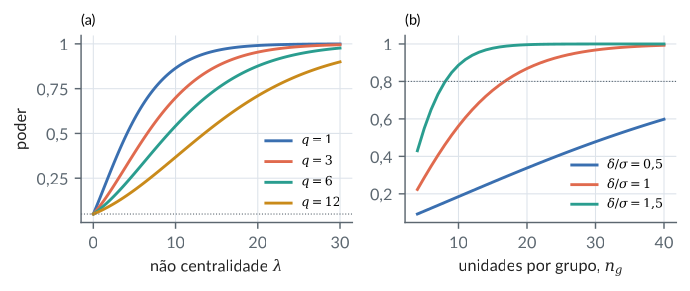
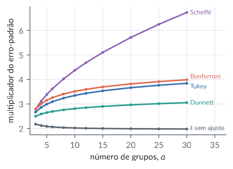
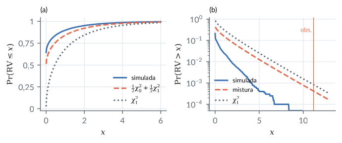
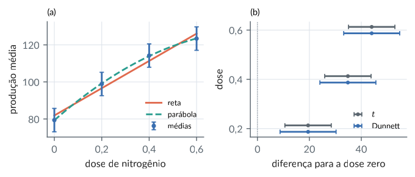
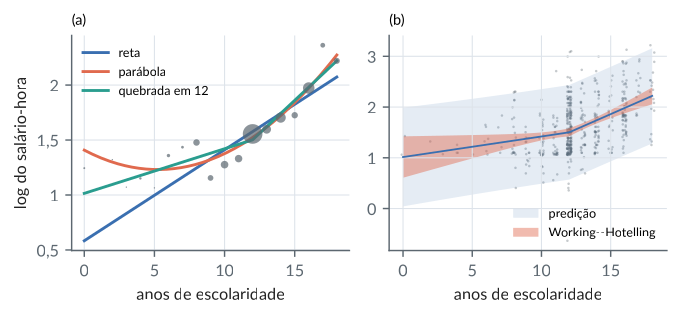
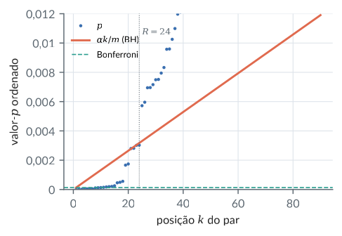
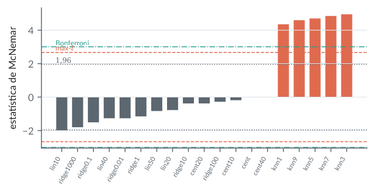
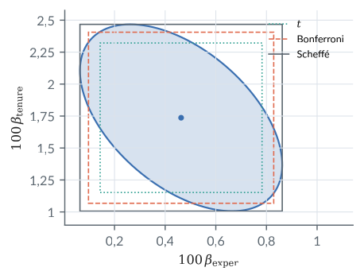

14. Inferência no modelo linear
Material reprodutível do Capítulo 14 do livro.
Exemplos
Teste F da hipótese linear geral: três contas iguais
R/cap14/01_teste_f.R
# Cap. 14: Teste F da hipótese linear geral: três contas iguais
pr <- function(...) cat(sprintf(...), "\n", sep = "")
# Dois grupos, modelo superparametrizado (posto 2 em 3 colunas)
y <- c(1, 3, 4, 6, 5); n <- 5
X <- cbind(1, c(1, 1, 0, 0, 0), c(0, 0, 1, 1, 1))
K <- rbind(c(0, 1, -1)); m <- 0; q <- 1
r <- qr(X)$rank
Gs <- list(diag(c(0, 1 / 2, 1 / 3)), MASS::ginv(crossprod(X)))
for (G in Gs) {
b <- drop(G %*% crossprod(X, y))
d <- drop(K %*% b) - m
KGK <- drop(K %*% G %*% t(K))
Q <- d^2 / KGK
s2 <- sum((y - X %*% b)^2) / (n - r)
pr("Kb %.4f KGK' %.4f Q %.4f s2 %.4f F %.4f", d, KGK, Q, s2,
Q / q / s2)
}
# Modelos encaixados: SQR restrita - SQR irrestrita
G <- Gs[[1]]; b <- drop(G %*% crossprod(X, y))
KGK <- K %*% G %*% t(K)
bK <- b - drop(G %*% t(K) %*% solve(KGK, K %*% b - m))
sqr0 <- sum((y - X %*% bK)^2); sqr1 <- sum((y - X %*% b)^2)
Fobs <- (sqr0 - sqr1) / q / (sqr1 / (n - r))
pr("SQR0 %.4f SQR1 %.4f F %.4f", sqr0, sqr1, Fobs)
pr("p %.4f crit5%% %.3f", pf(Fobs, q, n - r, lower.tail = FALSE),
qf(0.95, q, n - r))
# Geometria: P1 - P0 é a projeção em Col(XGK')
A <- X %*% G %*% t(K)
PA <- A %*% solve(crossprod(A), t(A))
P1 <- X %*% G %*% t(X)
P0 <- matrix(1 / n, n, n)
pr("max|P1-P0-PA| %.1e y'PAy %.4f", max(abs(P1 - P0 - PA)),
sum(y * (PA %*% y)))
# Hipótese não estimável: alfa_1 = 0 não muda o ajuste
K2 <- rbind(c(0, 1, 0))
Z <- X[, -2]
pr("SQR sob alfa1=0 %.4f (igual a SQR1 %.4f)",
sum((y - Z %*% solve(crossprod(Z), crossprod(Z, y)))^2), sqr1)
# Três pontos: H0 beta_1 = 0 e H0 (beta_0, beta_1) = (1, 1)
x <- 0:2; y3 <- c(1, 2, 4); X3 <- cbind(1, x)
A3 <- solve(crossprod(X3))
b3 <- drop(A3 %*% crossprod(X3, y3))
s23 <- sum((y3 - X3 %*% b3)^2) / 1
d <- b3 - c(1, 1)
F2 <- drop(t(d) %*% solve(A3, d)) / 2 / s23
pr("3 pontos: b (%.4f, %.4f) s2 %.4f F(q=1) %.1f F(q=2) %.2f",
b3[1], b3[2], s23, b3[2]^2 / A3[2, 2] / s23, F2)Saída
Kb -3.0000 KGK' 0.8333 Q 10.8000 s2 1.3333 F 8.1000
Kb -3.0000 KGK' 0.8333 Q 10.8000 s2 1.3333 F 8.1000
SQR0 14.8000 SQR1 4.0000 F 8.1000
p 0.0653 crit5% 10.128
max|P1-P0-PA| 5.6e-17 y'PAy 10.8000
SQR sob alfa1=0 4.0000 (igual a SQR1 4.0000)
3 pontos: b (0.8333, 1.5000) s2 0.1667 F(q=1) 27.0 F(q=2) 2.50python/cap14/01_teste_f.py
"""Cap. 14: Teste F da hipótese linear geral: três contas iguais."""
import numpy as np
from scipy import stats
# Dois grupos, modelo superparametrizado (posto 2 em 3 colunas)
y = np.array([1.0, 3, 4, 6, 5]); n = 5
X = np.column_stack([np.ones(5), [1, 1, 0, 0, 0], [0, 0, 1, 1, 1]])
K = np.array([[0.0, 1, -1]]); m = 0; q = 1
r = np.linalg.matrix_rank(X)
Gs = [np.diag([0, 1 / 2, 1 / 3]), np.linalg.pinv(X.T @ X)]
for G in Gs:
b = G @ X.T @ y
d = (K @ b).item() - m
KGK = (K @ G @ K.T).item()
Q = d**2 / KGK
s2 = np.sum((y - X @ b) ** 2) / (n - r)
print(f"Kb {d:.4f} KGK' {KGK:.4f} Q {Q:.4f} s2 {s2:.4f}"
f" F {Q / q / s2:.4f}")
# Modelos encaixados: SQR restrita - SQR irrestrita
G = Gs[0]; b = G @ X.T @ y
KGK = K @ G @ K.T
bK = b - G @ K.T @ np.linalg.solve(KGK, K @ b - m)
sqr0 = np.sum((y - X @ bK) ** 2); sqr1 = np.sum((y - X @ b) ** 2)
Fobs = (sqr0 - sqr1) / q / (sqr1 / (n - r))
print(f"SQR0 {sqr0:.4f} SQR1 {sqr1:.4f} F {Fobs:.4f}")
print(f"p {stats.f.sf(Fobs, q, n - r):.4f}"
f" crit5% {stats.f.ppf(0.95, q, n - r):.3f}")
# Geometria: P1 - P0 é a projeção em Col(XGK')
A = X @ G @ K.T
PA = A @ np.linalg.solve(A.T @ A, A.T)
P1 = X @ G @ X.T
P0 = np.full((n, n), 1 / n)
print(f"max|P1-P0-PA| {np.abs(P1 - P0 - PA).max():.1e}"
f" y'PAy {y @ PA @ y:.4f}")
# Hipótese não estimável: alfa_1 = 0 não muda o ajuste
Z = X[:, [0, 2]]
ez = y - Z @ np.linalg.solve(Z.T @ Z, Z.T @ y)
print(f"SQR sob alfa1=0 {ez @ ez:.4f} (igual a SQR1 {sqr1:.4f})")
# Três pontos: H0 beta_1 = 0 e H0 (beta_0, beta_1) = (1, 1)
x = np.arange(3.0); y3 = np.array([1.0, 2, 4])
X3 = np.column_stack([np.ones(3), x]); A3 = np.linalg.inv(X3.T @ X3)
b3 = A3 @ X3.T @ y3
s23 = np.sum((y3 - X3 @ b3) ** 2) / 1
d = b3 - np.array([1.0, 1])
F2 = d @ np.linalg.solve(A3, d) / 2 / s23
print(f"3 pontos: b ({b3[0]:.4f}, {b3[1]:.4f}) s2 {s23:.4f}"
f" F(q=1) {b3[1]**2 / A3[1, 1] / s23:.1f} F(q=2) {F2:.2f}")Saída
Kb -3.0000 KGK' 0.8333 Q 10.8000 s2 1.3333 F 8.1000
Kb -3.0000 KGK' 0.8333 Q 10.8000 s2 1.3333 F 8.1000
SQR0 14.8000 SQR1 4.0000 F 8.1000
p 0.0653 crit5% 10.128
max|P1-P0-PA| 5.6e-17 y'PAy 10.8000
SQR sob alfa1=0 4.0000 (igual a SQR1 4.0000)
3 pontos: b (0.8333, 1.5000) s2 0.1667 F(q=1) 27.0 F(q=2) 2.50Poder do teste F e tamanho de amostra
R/cap14/02_poder.R
# Cap. 14: Poder do teste F e tamanho de amostra
source(file.path("R", "comum", "gerador.R"))
pr <- function(...) cat(sprintf(...), "\n", sep = "")
poder <- function(lam, q, nu, a = 0.05)
pf(qf(1 - a, q, nu), q, nu, ncp = lam, lower.tail = FALSE)
# Dois grupos de r unidades, delta/sigma = 1: lambda = r/2
for (r in c(10, 15, 16, 17, 18, 20))
pr("r %2d lambda %.1f poder %.4f", r, r / 2,
poder(r / 2, 1, 2 * r - 2))
pr("aproximação normal: r = %.2f",
2 * (qnorm(0.975) + qnorm(0.8))^2)
# Mesmo lambda, mais graus de liberdade no numerador: menos poder
for (q in c(1, 2, 3, 6, 12))
pr("q %2d poder(lambda = 10, nu = 30) %.4f", q, poder(10, q, 30))
# Conferência por simulação: 3 grupos de 5, sigma = 2 (Cap. 10)
g <- gerador(1414); N <- 20000; rej <- 0
mu <- rep(c(10, 11, 13), each = 5); cr <- qf(0.95, 2, 12)
Z <- matriz_normal(g, N, 15, sd = 2)
for (i in seq_len(N)) {
y <- mu + Z[i, ]
mg <- c(mean(y[1:5]), mean(y[6:10]), mean(y[11:15]))
qe <- sum((y - rep(mg, each = 5))^2) / 12
qa <- 5 * sum((mg - mean(y))^2) / 2
rej <- rej + (qa / qe > cr)
}
lam <- 5 * sum((c(10, 11, 13) - 34 / 3)^2) / 4
pr("lambda %.3f poder %.4f simulado %.4f", lam, poder(lam, 2, 12),
rej / N)Saída
r 10 lambda 5.0 poder 0.5620
r 15 lambda 7.5 poder 0.7529
r 16 lambda 8.0 poder 0.7814
r 17 lambda 8.5 poder 0.8070
r 18 lambda 9.0 poder 0.8300
r 20 lambda 10.0 poder 0.8690
aproximação normal: r = 15.70
q 1 poder(lambda = 10, nu = 30) 0.8642
q 2 poder(lambda = 10, nu = 30) 0.7724
q 3 poder(lambda = 10, nu = 30) 0.6992
q 6 poder(lambda = 10, nu = 30) 0.5418
q 12 poder(lambda = 10, nu = 30) 0.3677
lambda 5.833 poder 0.4632 simulado 0.4586python/cap14/02_poder.py
"""Cap. 14: Poder do teste F e tamanho de amostra."""
import sys
from pathlib import Path
import numpy as np
from scipy import stats
sys.path.insert(0, str(Path(__file__).resolve().parents[1]))
from comum.gerador import Gerador # noqa: E402
def poder(lam, q, nu, a=0.05):
return stats.ncf.sf(stats.f.ppf(1 - a, q, nu), q, nu, lam)
# Dois grupos de r unidades, delta/sigma = 1: lambda = r/2
for r in [10, 15, 16, 17, 18, 20]:
print(f"r {r:2d} lambda {r / 2:.1f}"
f" poder {poder(r / 2, 1, 2 * r - 2):.4f}")
za, zb = stats.norm.ppf(0.975), stats.norm.ppf(0.8)
print(f"aproximação normal: r = {2 * (za + zb) ** 2:.2f}")
# Mesmo lambda, mais graus de liberdade no numerador: menos poder
for q in [1, 2, 3, 6, 12]:
print(f"q {q:2d} poder(lambda = 10, nu = 30)"
f" {poder(10, q, 30):.4f}")
# Conferência por simulação: 3 grupos de 5, sigma = 2 (Cap. 10)
g = Gerador(1414); N = 20000
mu = np.repeat([10.0, 11, 13], 5); cr = stats.f.ppf(0.95, 2, 12)
Y = mu + g.matriz_normal(N, 15, sd=2)
mg = Y.reshape(N, 3, 5).mean(axis=2)
qe = ((Y - np.repeat(mg, 5, axis=1)) ** 2).sum(axis=1) / 12
qa = 5 * ((mg - Y.mean(axis=1, keepdims=True)) ** 2).sum(axis=1) / 2
rej = np.sum(qa / qe > cr)
lam = 5 * np.sum((np.array([10, 11, 13]) - 34 / 3) ** 2) / 4
print(f"lambda {lam:.3f} poder {poder(lam, 2, 12):.4f}"
f" simulado {rej / N:.4f}")Saída
r 10 lambda 5.0 poder 0.5620
r 15 lambda 7.5 poder 0.7529
r 16 lambda 8.0 poder 0.7814
r 17 lambda 8.5 poder 0.8070
r 18 lambda 9.0 poder 0.8300
r 20 lambda 10.0 poder 0.8690
aproximação normal: r = 15.70
q 1 poder(lambda = 10, nu = 30) 0.8642
q 2 poder(lambda = 10, nu = 30) 0.7724
q 3 poder(lambda = 10, nu = 30) 0.6992
q 6 poder(lambda = 10, nu = 30) 0.5418
q 12 poder(lambda = 10, nu = 30) 0.3677
lambda 5.833 poder 0.4632 simulado 0.4586Figura: poder
python/cap14/fig_cap14.py
def fig_poder():
fig, (a1, a2) = plt.subplots(1, 2, figsize=(LARG, 2.3))
lam = np.linspace(0.01, 30, 121)
for j, q in enumerate([1, 3, 6, 12]):
cr = stats.f.ppf(0.95, q, 30)
a1.plot(lam, stats.ncf.sf(cr, q, 30, lam), color=CATEG[j],
label=f"$q={q}$")
a1.axhline(0.05, color=COR["cinza"], lw=0.6, ls=":")
a1.set_xlabel(r"não centralidade $\lambda$")
a1.set_ylabel("poder")
a1.legend(fontsize=7, loc="lower right")
rr = np.arange(4, 41)
for j, dl in enumerate([0.5, 1.0, 1.5]):
pw = [stats.ncf.sf(stats.f.ppf(0.95, 1, 2 * r - 2), 1,
2 * r - 2, r * dl**2 / 2) for r in rr]
a2.plot(rr, pw, color=CATEG[j],
label=rf"$\delta/\sigma={dl:g}$".replace(".", "{,}"))
a2.axhline(0.8, color=COR["cinza"], lw=0.6, ls=":")
a2.set_xlabel("unidades por grupo, $n_g$")
a2.legend(fontsize=7, loc="lower right")
for a, t in ((a1, "(a)"), (a2, "(b)")):
virgula(a); a.set_title(t, loc="left", fontsize=8)
fig.tight_layout()
salvar(fig, CAP, "poder")Trecho de python/cap14/fig_cap14.py, que traz também as importações e o estilo.

Razão de verossimilhanças, Wald e escore
R/cap14/03_trindade.R
# Cap. 14: Razão de verossimilhanças, Wald e escore
pr <- function(...) cat(sprintf(...), "\n", sep = "")
est <- function(Fv, q, n, r) {
x <- q * Fv / (n - r)
c(W = n * x, RV = n * log1p(x), E = n * x / (1 + x))
}
# Os dois grupos: F = 8,1 com n = 5, r = 2, q = 1
s <- est(8.1, 1, 5, 2)
pr("W %.3f RV %.3f E %.3f", s[1], s[2], s[3])
pr("p W %.4f RV %.4f E %.4f F %.4f",
pchisq(s[1], 1, lower.tail = FALSE),
pchisq(s[2], 1, lower.tail = FALSE),
pchisq(s[3], 1, lower.tail = FALSE),
pf(8.1, 1, 3, lower.tail = FALSE))
# Conta direta a partir dos resíduos
y <- c(1, 3, 4, 6, 5); e1 <- y - c(2, 2, 5, 5, 5); e0 <- y - mean(y)
s1 <- sum(e1^2) / 5; s0 <- sum(e0^2) / 5
X <- cbind(c(1, 1, 0, 0, 0), c(0, 0, 1, 1, 1))
P <- X %*% solve(crossprod(X), t(X))
pr("s1 %.3f s0 %.3f W %.3f RV %.3f E %.3f", s1, s0,
(sum(e0^2) - sum(e1^2)) / s1, 5 * log(s0 / s1),
sum(e0 * (P %*% e0)) / s0)
# Tamanho real a 5% (calibração qui-quadrado): exato, pois cada
# estatística é função crescente de F
tam <- function(q, n, r) {
cc <- qchisq(0.95, q); nu <- n - r
c(W = pf(cc * nu / (n * q), q, nu, lower.tail = FALSE),
RV = pf(expm1(cc / n) * nu / q, q, nu, lower.tail = FALSE),
E = if (cc < n) pf(cc / (1 - cc / n) * nu / (n * q), q, nu,
lower.tail = FALSE) else 0)
}
pr("%5s %5s %7s %7s %7s", "n", "r", "W", "RV", "E")
for (n in c(10, 20, 50, 100, 500)) for (q in 3) {
r <- 5; t <- tam(q, n, r)
pr("%5d %5d %7.3f %7.3f %7.3f", n, r, t[1], t[2], t[3])
}Saída
W 13.500 RV 6.542 E 3.649
p W 0.0002 RV 0.0105 E 0.0561 F 0.0653
s1 0.800 s0 2.960 W 13.500 RV 6.542 E 3.649
n r W RV E
10 5 0.370 0.236 0.042
20 5 0.164 0.109 0.054
50 5 0.086 0.068 0.052
100 5 0.066 0.059 0.051
500 5 0.053 0.052 0.050python/cap14/03_trindade.py
"""Cap. 14: Razão de verossimilhanças, Wald e escore."""
import numpy as np
from scipy import stats
def est(Fv, q, n, r):
x = q * Fv / (n - r)
return n * x, n * np.log1p(x), n * x / (1 + x)
# Os dois grupos: F = 8,1 com n = 5, r = 2, q = 1
s = est(8.1, 1, 5, 2)
print(f"W {s[0]:.3f} RV {s[1]:.3f} E {s[2]:.3f}")
ps = [stats.chi2.sf(v, 1) for v in s]
print(f"p W {ps[0]:.4f} RV {ps[1]:.4f} E {ps[2]:.4f}"
f" F {stats.f.sf(8.1, 1, 3):.4f}")
# Conta direta a partir dos resíduos
y = np.array([1.0, 3, 4, 6, 5])
e1 = y - np.array([2.0, 2, 5, 5, 5]); e0 = y - y.mean()
s1 = np.sum(e1**2) / 5; s0 = np.sum(e0**2) / 5
X = np.column_stack([[1, 1, 0, 0, 0], [0, 0, 1, 1, 1]]).astype(float)
P = X @ np.linalg.solve(X.T @ X, X.T)
print(f"s1 {s1:.3f} s0 {s0:.3f}"
f" W {(e0 @ e0 - e1 @ e1) / s1:.3f}"
f" RV {5 * np.log(s0 / s1):.3f} E {e0 @ P @ e0 / s0:.3f}")
# Tamanho real a 5% (calibração qui-quadrado): exato, pois cada
# estatística é função crescente de F
def tam(q, n, r):
cc = stats.chi2.ppf(0.95, q); nu = n - r
w = stats.f.sf(cc * nu / (n * q), q, nu)
rv = stats.f.sf(np.expm1(cc / n) * nu / q, q, nu)
e = stats.f.sf(cc / (1 - cc / n) * nu / (n * q), q, nu) \
if cc < n else 0.0
return w, rv, e
print(f"{'n':>5} {'r':>5} {'W':>7} {'RV':>7} {'E':>7}")
for n in [10, 20, 50, 100, 500]:
t = tam(3, n, 5)
print(f"{n:5d} {5:5d} {t[0]:7.3f} {t[1]:7.3f} {t[2]:7.3f}")Saída
W 13.500 RV 6.542 E 3.649
p W 0.0002 RV 0.0105 E 0.0561 F 0.0653
s1 0.800 s0 2.960 W 13.500 RV 6.542 E 3.649
n r W RV E
10 5 0.370 0.236 0.042
20 5 0.164 0.109 0.054
50 5 0.086 0.068 0.052
100 5 0.066 0.059 0.051
500 5 0.053 0.052 0.050Regiões de confiança e intervalos de predição
R/cap14/04_regioes.R
# Cap. 14: Regiões de confiança e intervalos de predição
source(file.path("R", "comum", "gerador.R"))
pr <- function(...) cat(sprintf(...), "\n", sep = "")
# Elipse para as duas médias: (2, 5), s2 = 4/3, gl = 3
F23 <- qf(0.95, 2, 3); s2 <- 4 / 3
pr("F(2,3) %.3f c %.3f", F23, 2 * s2 * F23)
pr("semieixos %.3f %.3f", sqrt(2 * s2 * F23 / 2),
sqrt(2 * s2 * F23 / 3))
for (v in list(c(3, 3), c(0, 0)))
pr("(%g, %g): forma %.1f", v[1], v[2],
2 * (v[1] - 2)^2 + 3 * (v[2] - 5)^2)
# Sombra da elipse: Scheffé contra t para cada média
t3 <- qt(0.975, 3)
for (nj in c(2, 3))
pr("n %d: t %.3f sombra %.3f", nj, t3 * sqrt(s2 / nj),
sqrt(2 * F23) * sqrt(s2 / nj))
# Três pontos: média e nova observação em x0 = 3
x <- 0:2; y <- c(1, 2, 4); X <- cbind(1, x)
A <- solve(crossprod(X)); b <- drop(A %*% crossprod(X, y))
s2 <- sum((y - X %*% b)^2); x0 <- c(1, 3)
y0 <- sum(x0 * b); h <- drop(t(x0) %*% A %*% x0); tt <- qt(0.975, 1)
pr("y0 %.4f h %.4f t %.3f", y0, h, tt)
pr("IC +- %.3f IP +- %.3f", tt * sqrt(s2 * h),
tt * sqrt(s2 * (1 + h)))
# Cobertura: regressão com 30 pontos, erros de variância 1
X <- cbind(1, seq(0, 1, length.out = 30)); A <- solve(crossprod(X))
H <- A %*% t(X); M <- diag(30) - X %*% H; x0 <- c(1, 1.2)
h <- drop(t(x0) %*% A %*% x0); tt <- qt(0.975, 28)
g <- gerador(1405); N <- 20000
erro <- list(
normal = function(k) g$normal(k),
uniforme = function(k) sqrt(12) * (g$unif(k) - 0.5),
exponencial = function(k) -log(g$unif(k)) - 1)
pr("%-12s %7s %7s %7s", "erro", "cob.IC", "falhaE", "falhaD")
for (nm in names(erro)) {
E <- matrix(erro[[nm]](30 * N), N, 30, byrow = TRUE)
e0 <- erro[[nm]](N)
dif <- drop(E %*% t(H) %*% x0) # ajuste - média
s <- sqrt(rowSums((E %*% M)^2) / 28)
ic <- mean(abs(dif) <= tt * s * sqrt(h))
z <- (e0 - dif) / (s * sqrt(1 + h)) # y0 - ajuste
pr("%-12s %7.4f %7.4f %7.4f", nm, ic, mean(z < -tt), mean(z > tt))
}Saída
F(2,3) 9.552 c 25.472
semieixos 3.569 2.914
(3, 3): forma 14.0
(0, 0): forma 83.0
n 2: t 2.598 sombra 3.569
n 3: t 2.122 sombra 2.914
y0 5.3333 h 2.3333 t 12.706
IC +- 7.924 IP +- 9.471
erro cob.IC falhaE falhaD
normal 0.9495 0.0244 0.0257
uniforme 0.9529 0.0126 0.0129
exponencial 0.9476 0.0011 0.0554python/cap14/04_regioes.py
"""Cap. 14: Regiões de confiança e intervalos de predição."""
import sys
from pathlib import Path
import numpy as np
from scipy import stats
sys.path.insert(0, str(Path(__file__).resolve().parents[1]))
from comum.gerador import Gerador # noqa: E402
# Elipse para as duas médias: (2, 5), s2 = 4/3, gl = 3
F23 = stats.f.ppf(0.95, 2, 3); s2 = 4 / 3
print(f"F(2,3) {F23:.3f} c {2 * s2 * F23:.3f}")
print(f"semieixos {np.sqrt(2 * s2 * F23 / 2):.3f}"
f" {np.sqrt(2 * s2 * F23 / 3):.3f}")
for v in [(3, 3), (0, 0)]:
print(f"({v[0]}, {v[1]}): forma"
f" {2 * (v[0] - 2) ** 2 + 3 * (v[1] - 5) ** 2:.1f}")
# Sombra da elipse: Scheffé contra t para cada média
t3 = stats.t.ppf(0.975, 3)
for nj in [2, 3]:
print(f"n {nj}: t {t3 * np.sqrt(s2 / nj):.3f}"
f" sombra {np.sqrt(2 * F23 * s2 / nj):.3f}")
# Três pontos: média e nova observação em x0 = 3
x = np.arange(3.0); y = np.array([1.0, 2, 4])
X = np.column_stack([np.ones(3), x])
A = np.linalg.inv(X.T @ X); b = A @ X.T @ y
s2 = np.sum((y - X @ b) ** 2); x0 = np.array([1.0, 3])
y0 = x0 @ b; h = x0 @ A @ x0; tt = stats.t.ppf(0.975, 1)
print(f"y0 {y0:.4f} h {h:.4f} t {tt:.3f}")
print(f"IC +- {tt * np.sqrt(s2 * h):.3f}"
f" IP +- {tt * np.sqrt(s2 * (1 + h)):.3f}")
# Cobertura: regressão com 30 pontos, erros de variância 1
X = np.column_stack([np.ones(30), np.linspace(0, 1, 30)])
A = np.linalg.inv(X.T @ X)
H = A @ X.T; M = np.eye(30) - X @ H; x0 = np.array([1, 1.2])
h = x0 @ A @ x0; tt = stats.t.ppf(0.975, 28)
g = Gerador(1405); N = 20000
erro = {"normal": lambda k: g.normal(k),
"uniforme": lambda k: np.sqrt(12) * (g.unif(k) - 0.5),
"exponencial": lambda k: -np.log(g.unif(k)) - 1}
print(f"{'erro':<12} {'cob.IC':>7} {'falhaE':>7} {'falhaD':>7}")
for nm, f in erro.items():
E = f(30 * N).reshape(N, 30)
e0 = f(N)
dif = E @ H.T @ x0 # ajuste - média
s = np.sqrt(((E @ M) ** 2).sum(axis=1) / 28)
ic = np.mean(np.abs(dif) <= tt * s * np.sqrt(h))
z = (e0 - dif) / (s * np.sqrt(1 + h)) # y0 - ajuste
print(f"{nm:<12} {ic:7.4f} {np.mean(z < -tt):7.4f}"
f" {np.mean(z > tt):7.4f}")Saída
F(2,3) 9.552 c 25.472
semieixos 3.569 2.914
(3, 3): forma 14.0
(0, 0): forma 83.0
n 2: t 2.598 sombra 3.569
n 3: t 2.122 sombra 2.914
y0 5.3333 h 2.3333 t 12.706
IC +- 7.924 IP +- 9.471
erro cob.IC falhaE falhaD
normal 0.9495 0.0244 0.0257
uniforme 0.9529 0.0126 0.0129
exponencial 0.9476 0.0011 0.0554Somas de quadrados sequenciais e parciais
R/cap14/05_somas.R
# Cap. 14: Somas de quadrados sequenciais e parciais
pr <- function(...) cat(sprintf(...), "\n", sep = "")
y <- c(3, 1, -2, -2); n <- 4
um <- rep(1, 4); x1 <- c(1, 1, -1, -1); x2 <- c(1, 0, 0, -1)
sqr <- function(...) {
Z <- cbind(...)
sum((y - Z %*% solve(crossprod(Z), crossprod(Z, y)))^2)
}
t0 <- sqr(um); r1 <- sqr(um, x1); r2 <- sqr(um, x2)
r12 <- sqr(um, x1, x2)
pr("SQ total %.2f residual %.2f", t0, r12)
pr("x1 primeiro: %.2f + %.2f", t0 - r1, r1 - r12)
pr("x2 primeiro: %.2f + %.2f", t0 - r2, r2 - r12)
pr("parciais: x1 %.2f x2 %.2f (soma %.2f)", r2 - r12, r1 - r12,
r2 - r12 + r1 - r12)
# Parcial = t^2 s^2 = b^2 / [(X'X)^-1]_jj
X <- cbind(um, x1, x2); A <- solve(crossprod(X))
b <- drop(A %*% crossprod(X, y))
pr("b %.3f %.3f %.3f", b[1], b[2], b[3])
pr("b1^2/A11 %.2f b2^2/A22 %.2f", b[2]^2 / A[2, 2],
b[3]^2 / A[3, 3])
# Testes: sequencial e parcial com o mesmo denominador
for (s in c(16, 4.5, 12.5, 1)) pr("SQ %5.2f F %5.2f p %.3f", s,
s / r12, pf(s / r12, 1, 1, lower.tail = FALSE))Saída
SQ total 18.00 residual 1.00
x1 primeiro: 16.00 + 1.00
x2 primeiro: 12.50 + 4.50
parciais: x1 4.50 x2 1.00 (soma 5.50)
b 0.000 1.500 1.000
b1^2/A11 4.50 b2^2/A22 1.00
SQ 16.00 F 16.00 p 0.156
SQ 4.50 F 4.50 p 0.280
SQ 12.50 F 12.50 p 0.175
SQ 1.00 F 1.00 p 0.500python/cap14/05_somas.py
"""Cap. 14: Somas de quadrados sequenciais e parciais."""
import numpy as np
from scipy import stats
y = np.array([3.0, 1, -2, -2]); n = 4
um = np.ones(4); x1 = np.array([1.0, 1, -1, -1])
x2 = np.array([1.0, 0, 0, -1])
def sqr(*cols):
Z = np.column_stack(cols)
e = y - Z @ np.linalg.solve(Z.T @ Z, Z.T @ y)
return e @ e
t0 = sqr(um); r1 = sqr(um, x1); r2 = sqr(um, x2)
r12 = sqr(um, x1, x2)
print(f"SQ total {t0:.2f} residual {r12:.2f}")
print(f"x1 primeiro: {t0 - r1:.2f} + {r1 - r12:.2f}")
print(f"x2 primeiro: {t0 - r2:.2f} + {r2 - r12:.2f}")
print(f"parciais: x1 {r2 - r12:.2f} x2 {r1 - r12:.2f}"
f" (soma {r2 - r12 + r1 - r12:.2f})")
# Parcial = t^2 s^2 = b^2 / [(X'X)^-1]_jj
X = np.column_stack([um, x1, x2]); A = np.linalg.inv(X.T @ X)
b = A @ X.T @ y
print(f"b {b[0]:.3f} {b[1]:.3f} {b[2]:.3f}")
print(f"b1^2/A11 {b[1]**2 / A[1, 1]:.2f}"
f" b2^2/A22 {b[2]**2 / A[2, 2]:.2f}")
# Testes: sequencial e parcial com o mesmo denominador
for s in [16, 4.5, 12.5, 1]:
print(f"SQ {s:5.2f} F {s / r12:5.2f}"
f" p {stats.f.sf(s / r12, 1, 1):.3f}")Saída
SQ total 18.00 residual 1.00
x1 primeiro: 16.00 + 1.00
x2 primeiro: 12.50 + 4.50
parciais: x1 4.50 x2 1.00 (soma 5.50)
b 0.000 1.500 1.000
b1^2/A11 4.50 b2^2/A22 1.00
SQ 16.00 F 16.00 p 0.156
SQ 4.50 F 4.50 p 0.280
SQ 12.50 F 12.50 p 0.175
SQ 1.00 F 1.00 p 0.500Falta de ajuste e o teste de aditividade de Tukey
R/cap14/06_falta_ajuste.R
# Cap. 14: Falta de ajuste e o teste de aditividade de Tukey
pr <- function(...) cat(sprintf(...), "\n", sep = "")
x <- c(0, 0, 1, 1, 2, 2); y <- c(1, 3, 2, 4, 7, 7)
X <- cbind(1, x); b <- solve(crossprod(X), crossprod(X, y))
ybar <- ave(y, x); yh <- drop(X %*% b)
sqp <- sum((y - ybar)^2); sqf <- sum((ybar - yh)^2)
Fl <- (sqf / 1) / (sqp / 3)
pr("b %.2f %.2f SQ falta %.2f SQ puro %.2f F %.2f p %.3f", b[1],
b[2], sqf, sqp, Fl, pf(Fl, 1, 3, lower.tail = FALSE))
# Tukey (1949): um grau de liberdade para não aditividade
Y <- rbind(c(2, 1, 3), c(1, 5, 6), c(3, 6, 9))
tukey <- function(Y) {
a <- rowMeans(Y) - mean(Y); bb <- colMeans(Y) - mean(Y)
E <- Y - outer(a, bb, "+") - mean(Y)
D <- sum(outer(a, bb) * Y)^2 / (sum(a^2) * sum(bb^2))
gl <- (nrow(Y) - 1) * (ncol(Y) - 1) - 1
Fv <- D / ((sum(E^2) - D) / gl)
list(a = a, b = bb, sqr = sum(E^2), D = D, F = Fv, gl = gl,
p = pf(Fv, 1, gl, lower.tail = FALSE))
}
t <- tukey(Y)
pr("a %.3f %.3f %.3f b %.3f %.3f %.3f", t$a[1], t$a[2], t$a[3],
t$b[1], t$b[2], t$b[3])
pr("SQRes %.4f D %.4f F %.2f gl %d p %.3f", t$sqr, t$D, t$F, t$gl,
t$p)Saída
b 1.50 2.50 SQ falta 3.00 SQ puro 4.00 F 2.25 p 0.231
a -2.000 0.000 2.000 b -2.000 0.000 2.000
SQRes 10.0000 D 6.2500 F 5.00 gl 3 p 0.111python/cap14/06_falta_ajuste.py
"""Cap. 14: Falta de ajuste e o teste de aditividade de Tukey."""
import numpy as np
from scipy import stats
x = np.array([0.0, 0, 1, 1, 2, 2]); y = np.array([1.0, 3, 2, 4, 7, 7])
X = np.column_stack([np.ones(6), x])
b = np.linalg.solve(X.T @ X, X.T @ y)
ybar = np.repeat(y.reshape(3, 2).mean(axis=1), 2); yh = X @ b
sqp = np.sum((y - ybar) ** 2); sqf = np.sum((ybar - yh) ** 2)
Fl = (sqf / 1) / (sqp / 3)
print(f"b {b[0]:.2f} {b[1]:.2f} SQ falta {sqf:.2f} SQ puro {sqp:.2f}"
f" F {Fl:.2f} p {stats.f.sf(Fl, 1, 3):.3f}")
# Tukey (1949): um grau de liberdade para não aditividade
def tukey(Y):
a = Y.mean(axis=1) - Y.mean(); bb = Y.mean(axis=0) - Y.mean()
E = Y - np.add.outer(a, bb) - Y.mean()
D = np.sum(np.outer(a, bb) * Y) ** 2 / (a @ a * (bb @ bb))
gl = (Y.shape[0] - 1) * (Y.shape[1] - 1) - 1
Fv = D / ((np.sum(E**2) - D) / gl)
return a, bb, np.sum(E**2), D, Fv, gl, stats.f.sf(Fv, 1, gl)
Y = np.array([[2.0, 1, 3], [1, 5, 6], [3, 6, 9]])
a, bb, sq, D, Fv, gl, p = tukey(Y)
print(f"a {a[0]:.3f} {a[1]:.3f} {a[2]:.3f}"
f" b {bb[0]:.3f} {bb[1]:.3f} {bb[2]:.3f}")
print(f"SQRes {sq:.4f} D {D:.4f} F {Fv:.2f} gl {gl} p {p:.3f}")Saída
b 1.50 2.50 SQ falta 3.00 SQ puro 4.00 F 2.25 p 0.231
a -2.000 0.000 2.000 b -2.000 0.000 2.000
SQRes 10.0000 D 6.2500 F 5.00 gl 3 p 0.111Comparações múltiplas: multiplicadores e cobertura
R/cap14/07_multiplos.R
# Cap. 14: Comparações múltiplas: multiplicadores e cobertura
source(file.path("R", "comum", "gerador.R"))
source(file.path("R", "comum", "multiplas.R"))
pr <- function(...) cat(sprintf(...), "\n", sep = "")
mult <- function(a, nu, al = 0.05) {
m <- a * (a - 1) / 2
c(t = qt(1 - al / 2, nu), bonf = qt(1 - al / (2 * m), nu),
tukey = qtukey(1 - al, a, nu) / sqrt(2),
dunnett = q_dunnett(a - 1, nu),
scheffe = sqrt((a - 1) * qf(1 - al, a - 1, nu)))
}
pr("%3s %3s %6s %6s %6s %6s %6s", "a", "nu", "t", "Bonf", "Tukey",
"Dunn", "Sch")
for (a in c(3, 5, 10, 20)) {
v <- mult(a, 4 * a)
pr("%3d %3d %6.3f %6.3f %6.3f %6.3f %6.3f", a, 4 * a, v[1], v[2],
v[3], v[4], v[5])
}
# Exemplo: 3 grupos de 5, s = 2, médias 10, 12, 15
v <- mult(3, 12); e3 <- 2 * sqrt(2 / 5)
pr("ep %.4f limites: t %.3f Bonf %.3f Tukey %.3f Dunn %.3f Sch %.3f",
e3, v[1] * e3, v[2] * e3, v[3] * e3, v[4] * e3, v[5] * e3)
# Cobertura simultânea das diferenças de pares: a = 5, r = 5
a <- 5; r <- 5; nu <- a * (r - 1); N <- 20000
g <- gerador(1414); v <- mult(a, nu); ep <- sqrt(2 / r)
Z <- matriz_normal(g, N, a * r)
ok <- matrix(0, N, 4)
for (i in seq_len(N)) {
Y <- matrix(Z[i, ], a, r, byrow = TRUE)
md <- rowMeans(Y); s <- sqrt(sum((Y - md)^2) / nu)
mx <- (max(md) - min(md)) / (s * ep)
ok[i, ] <- mx <= v[c(1, 2, 3, 5)]
}
cob <- colMeans(ok)
pr("cobertura: t %.4f Bonf %.4f Tukey %.4f Scheffé %.4f", cob[1],
cob[2], cob[3], cob[4])
# Benjamini-Hochberg e Holm à mão
p <- c(0.001, 0.012, 0.024, 0.035, 0.6); m <- 5; al <- 0.05
pr("limiares BH %s", paste(sprintf("%.3f", al * (1:m) / m),
collapse = " "))
holm <- 0
while (holm < m && p[holm + 1] <= al / (m - holm)) holm <- holm + 1
pr("rejeições: Bonferroni %d Holm %d BH %d", sum(p <= al / m), holm,
bh(p, al))Saída
a nu t Bonf Tukey Dunn Sch
3 12 2.179 2.779 2.668 2.502 2.788
5 20 2.086 3.153 2.992 2.651 3.386
10 40 2.021 3.514 3.348 2.811 4.372
20 80 1.990 3.819 3.665 2.964 5.713
ep 1.2649 limites: t 2.756 Bonf 3.516 Tukey 3.375 Dunn 3.165 Sch 3.526
cobertura: t 0.7356 Bonf 0.9661 Tukey 0.9509 Scheffé 0.9797
limiares BH 0.010 0.020 0.030 0.040 0.050
rejeições: Bonferroni 1 Holm 2 BH 4python/cap14/07_multiplos.py
"""Cap. 14: Comparações múltiplas: multiplicadores e cobertura."""
import sys
from pathlib import Path
import numpy as np
from scipy import stats
sys.path.insert(0, str(Path(__file__).resolve().parents[1]))
from comum.gerador import Gerador # noqa: E402
from comum.multiplas import bh, q_dunnett # noqa: E402
def mult(a, nu, al=0.05):
m = a * (a - 1) / 2
return (stats.t.ppf(1 - al / 2, nu),
stats.t.ppf(1 - al / (2 * m), nu),
stats.studentized_range.ppf(1 - al, a, nu) / np.sqrt(2),
q_dunnett(a - 1, nu),
np.sqrt((a - 1) * stats.f.ppf(1 - al, a - 1, nu)))
print(f"{'a':>3} {'nu':>3} {'t':>6} {'Bonf':>6} {'Tukey':>6}"
f" {'Dunn':>6} {'Sch':>6}")
for a in [3, 5, 10, 20]:
v = mult(a, 4 * a)
print(f"{a:3d} {4 * a:3d} {v[0]:6.3f} {v[1]:6.3f} {v[2]:6.3f}"
f" {v[3]:6.3f} {v[4]:6.3f}")
# Exemplo: 3 grupos de 5, s = 2, médias 10, 12, 15
v = mult(3, 12); e3 = 2 * np.sqrt(2 / 5)
print(f"ep {e3:.4f} limites: t {v[0] * e3:.3f} Bonf {v[1] * e3:.3f}"
f" Tukey {v[2] * e3:.3f} Dunn {v[3] * e3:.3f}"
f" Sch {v[4] * e3:.3f}")
# Cobertura simultânea das diferenças de pares: a = 5, r = 5
a = 5; r = 5; nu = a * (r - 1); N = 20000
g = Gerador(1414); v = mult(a, nu); ep = np.sqrt(2 / r)
Z = g.matriz_normal(N, a * r).reshape(N, a, r)
md = Z.mean(axis=2)
s = np.sqrt(((Z - md[:, :, None]) ** 2).sum(axis=(1, 2)) / nu)
mx = (md.max(axis=1) - md.min(axis=1)) / (s * ep)
cob = [np.mean(mx <= v[j]) for j in (0, 1, 2, 4)]
print(f"cobertura: t {cob[0]:.4f} Bonf {cob[1]:.4f}"
f" Tukey {cob[2]:.4f} Scheffé {cob[3]:.4f}")
# Benjamini-Hochberg e Holm à mão
p = np.array([0.001, 0.012, 0.024, 0.035, 0.6]); m = 5; al = 0.05
print("limiares BH " + " ".join(f"{al * k / m:.3f}"
for k in range(1, m + 1)))
holm = 0
while holm < m and p[holm] <= al / (m - holm):
holm += 1
print(f"rejeições: Bonferroni {np.sum(p <= al / m)} Holm {holm}"
f" BH {bh(p, al)}")Saída
a nu t Bonf Tukey Dunn Sch
3 12 2.179 2.779 2.668 2.502 2.788
5 20 2.086 3.153 2.992 2.651 3.386
10 40 2.021 3.514 3.348 2.811 4.372
20 80 1.990 3.819 3.665 2.964 5.713
ep 1.2649 limites: t 2.756 Bonf 3.516 Tukey 3.375 Dunn 3.165 Sch 3.526
cobertura: t 0.7356 Bonf 0.9661 Tukey 0.9509 Scheffé 0.9797
limiares BH 0.010 0.020 0.030 0.040 0.050
rejeições: Bonferroni 1 Holm 2 BH 4Figura: multiplicadores
python/cap14/fig_cap14.py
def fig_multiplicadores():
aa = np.array([3, 4, 5, 6, 8, 10, 12, 15, 20, 25, 30])
t, bo, tu, du, sc = [], [], [], [], []
for a in aa:
nu = 4 * a; m = a * (a - 1) / 2
t.append(stats.t.ppf(0.975, nu))
bo.append(stats.t.ppf(1 - 0.025 / m, nu))
tu.append(stats.studentized_range.ppf(0.95, a, nu)
/ np.sqrt(2))
du.append(q_dunnett(int(a) - 1, nu))
sc.append(np.sqrt((a - 1) * stats.f.ppf(0.95, a - 1, nu)))
fig, ax = plt.subplots(figsize=(3.8, 2.5))
for v, nm, c in ((sc, "Scheffé", CATEG[4]), (bo, "Bonferroni",
CATEG[1]),
(tu, "Tukey", CATEG[0]),
(du, "Dunnett", CATEG[2]),
(t, "$t$ sem ajuste", COR["cinza"])):
ax.plot(aa, v, color=c, marker="o", ms=2)
dy = {"Bonferroni": 0.13, "Tukey": -0.13}.get(nm, 0)
ax.text(30.6, v[-1] + dy, nm, fontsize=7, color=c,
va="center")
ax.set_xlim(2, 37)
ax.set_xlabel("número de grupos, $a$")
ax.set_ylabel("multiplicador do erro-padrão")
virgula(ax)
salvar(fig, CAP, "multiplicadores")Trecho de python/cap14/fig_cap14.py, que traz também as importações e o estilo.

Benjamini-Hochberg: FDR em simulação
R/cap14/08_fdr.R
# Cap. 14: Benjamini-Hochberg: FDR em simulação
source(file.path("R", "comum", "gerador.R"))
source(file.path("R", "comum", "multiplas.R"))
pr <- function(...) cat(sprintf(...), "\n", sep = "")
m <- 50; N <- 4000; al <- 0.10; delta <- 3
g <- gerador(2026)
sim <- function(m0, rho) {
Z <- matriz_normal(g, N, m); u <- g$normal(N)
W <- sqrt(rho) * u + sqrt(1 - rho) * Z
if (m0 < m) W[, (m0 + 1):m] <- W[, (m0 + 1):m] + delta
fdp <- fwb <- pdb <- pwb <- pwo <- numeric(N)
for (i in seq_len(N)) {
p <- 2 * pnorm(-abs(W[i, ]))
R <- bh(p, al); lim <- al * R / m
rej <- if (R > 0) p <= lim else rep(FALSE, m)
V <- if (m0 > 0) sum(rej[seq_len(m0)]) else 0
S <- R - V
fdp[i] <- if (R > 0) V / R else 0
bo <- p <= al / m
fwb[i] <- if (m0 > 0) any(bo[seq_len(m0)]) else 0
if (m0 < m) {
pdb[i] <- S / (m - m0)
pwb[i] <- sum(bo[-seq_len(m0)]) / (m - m0)
}
}
c(fdr = mean(fdp), fwer_bonf = mean(fwb), poder_bh = mean(pdb),
poder_bonf = mean(pwb))
}
pr("%4s %4s %7s %7s %7s %7s %7s", "m0", "rho", "FDR", "lim",
"FWER_B", "pod_BH", "pod_B")
for (rho in c(0, 0.5)) for (m0 in c(50, 45, 25, 5)) {
v <- sim(m0, rho)
pr("%4d %4.1f %7.4f %7.4f %7.4f %7.4f %7.4f", m0, rho, v[1],
al * m0 / m, v[2], v[3], v[4])
}Saída
m0 rho FDR lim FWER_B pod_BH pod_B
50 0.0 0.1047 0.1000 0.0990 0.0000 0.0000
45 0.0 0.0942 0.0900 0.0838 0.6299 0.4634
25 0.0 0.0497 0.0500 0.0483 0.8395 0.4675
5 0.0 0.0102 0.0100 0.0107 0.8940 0.4617
50 0.5 0.0678 0.1000 0.0560 0.0000 0.0000
45 0.5 0.0716 0.0900 0.0525 0.6209 0.4756
25 0.5 0.0508 0.0500 0.0372 0.8074 0.4619
5 0.5 0.0112 0.0100 0.0077 0.8691 0.4595python/cap14/08_fdr.py
"""Cap. 14: Benjamini-Hochberg: FDR em simulação."""
import sys
from pathlib import Path
import numpy as np
from scipy import stats
sys.path.insert(0, str(Path(__file__).resolve().parents[1]))
from comum.gerador import Gerador # noqa: E402
from comum.multiplas import bh # noqa: E402
m = 50; N = 4000; al = 0.10; delta = 3
g = Gerador(2026)
def sim(m0, rho):
Z = g.matriz_normal(N, m); u = g.normal(N)
W = np.sqrt(rho) * u[:, None] + np.sqrt(1 - rho) * Z
W[:, m0:] += delta
P = 2 * stats.norm.cdf(-np.abs(W))
fdp = np.zeros(N); fwb = np.zeros(N)
pdb = np.zeros(N); pwb = np.zeros(N)
for i in range(N):
p = P[i]
R = bh(p, al)
rej = p <= al * R / m if R > 0 else np.zeros(m, bool)
V = rej[:m0].sum(); S = R - V
fdp[i] = V / R if R > 0 else 0
bo = p <= al / m
fwb[i] = bo[:m0].any() if m0 > 0 else 0
if m0 < m:
pdb[i] = S / (m - m0); pwb[i] = bo[m0:].sum() / (m - m0)
return fdp.mean(), fwb.mean(), pdb.mean(), pwb.mean()
print(f"{'m0':>4} {'rho':>4} {'FDR':>7} {'lim':>7} {'FWER_B':>7}"
f" {'pod_BH':>7} {'pod_B':>7}")
for rho in [0, 0.5]:
for m0 in [50, 45, 25, 5]:
v = sim(m0, rho)
print(f"{m0:4d} {rho:4.1f} {v[0]:7.4f} {al * m0 / m:7.4f}"
f" {v[1]:7.4f} {v[2]:7.4f} {v[3]:7.4f}")Saída
m0 rho FDR lim FWER_B pod_BH pod_B
50 0.0 0.1047 0.1000 0.0990 0.0000 0.0000
45 0.0 0.0942 0.0900 0.0838 0.6299 0.4634
25 0.0 0.0497 0.0500 0.0483 0.8395 0.4675
5 0.0 0.0102 0.0100 0.0107 0.8940 0.4617
50 0.5 0.0678 0.1000 0.0560 0.0000 0.0000
45 0.5 0.0716 0.0900 0.0525 0.6209 0.4756
25 0.5 0.0508 0.0500 0.0372 0.8074 0.4619
5 0.5 0.0112 0.0100 0.0077 0.8691 0.4595Sobreidentificação: a estatística de Sargan
R/cap14/09_sargan.R
# Cap. 14: Sobreidentificação: a estatística de Sargan
source(file.path("R", "comum", "gerador.R"))
pr <- function(...) cat(sprintf(...), "\n", sep = "")
proj <- function(Z, v) Z %*% solve(crossprod(Z), crossprod(Z, v))
sargan <- function(y, X, Z) {
Xh <- proj(Z, X)
b <- solve(crossprod(Xh, X), crossprod(Xh, y))
e <- y - X %*% b
list(b = drop(b), e = drop(e), num = sum(proj(Z, e)^2),
S = sum(proj(Z, e)^2) / (sum(e^2) / length(y)))
}
# Exemplo à mão: Z ortonormal, Z'x = (2, 1), Z'y = (1, 1)
Z <- cbind(rep(1, 4), c(1, 1, -1, -1)) / 2
x <- c(1.5, 1.5, 0.5, 0.5); y <- c(1.5, 0.5, 0.5, -0.5)
s <- sargan(y, cbind(x), Z)
pr("Z'x %.1f %.1f Z'y %.1f %.1f", sum(Z[, 1] * x), sum(Z[, 2] * x),
sum(Z[, 1] * y), sum(Z[, 2] * y))
pr("b %.2f e %s", s$b, paste(sprintf("%.1f", s$e), collapse = " "))
pr("e'PZe %.2f e'e/n %.2f S %.4f p %.3f", s$num, sum(s$e^2) / 4,
s$S, pchisq(s$S, 1, lower.tail = FALSE))
# Identidade: e'PZe = eps'(PZ - P_Xh)eps
g <- gerador(77); n <- 12
Z <- cbind(1, matriz_normal(g, n, 3)); X <- cbind(1, g$normal(n))
eps <- g$normal(n); beta <- c(1, 2); y <- drop(X %*% beta) + eps
s <- sargan(y, X, Z); Xh <- proj(Z, X)
pr("identidade: %.10f %.10f", s$num,
sum(proj(Z, eps)^2) - sum(proj(Xh, eps)^2))
# Simulação: n = 100, k = 3, p = 2 (um grau de sobreidentificação)
simula <- function(c1, c2, N = 4000, n = 100) {
g <- gerador(1958); rej <- 0; bb <- 0; cr <- qchisq(0.95, 1)
for (i in seq_len(N)) {
z1 <- g$normal(n); z2 <- g$normal(n)
v <- g$normal(n); e <- g$normal(n)
eps <- 0.7 * v + sqrt(0.51) * e
x <- 0.5 * z1 + 0.5 * z2 + v
y <- x + c1 * z1 + c2 * z2 + eps
s <- sargan(y, cbind(1, x), cbind(1, z1, z2))
rej <- rej + (s$S > cr); bb <- bb + s$b[2]
}
c(rej / N, bb / N)
}
for (cc in list(c(0, 0), c(0, 0.3), c(0.3, 0.3))) {
v <- simula(cc[1], cc[2])
pr("efeito direto (%.1f, %.1f): rejeita %.3f média beta %.3f",
cc[1], cc[2], v[1], v[2])
}Saída
Z'x 2.0 1.0 Z'y 1.0 1.0
b 0.60 e 0.6 -0.4 0.2 -0.8
e'PZe 0.20 e'e/n 0.30 S 0.6667 p 0.414
identidade: 0.7033378718 0.7033378718
efeito direto (0.0, 0.0): rejeita 0.057 média beta 0.999
efeito direto (0.0, 0.3): rejeita 0.700 média beta 1.300
efeito direto (0.3, 0.3): rejeita 0.053 média beta 1.599python/cap14/09_sargan.py
"""Cap. 14: Sobreidentificação: a estatística de Sargan."""
import sys
from pathlib import Path
import numpy as np
from scipy import stats
sys.path.insert(0, str(Path(__file__).resolve().parents[1]))
from comum.gerador import Gerador # noqa: E402
def proj(Z, v):
return Z @ np.linalg.solve(Z.T @ Z, Z.T @ v)
def sargan(y, X, Z):
Xh = proj(Z, X)
b = np.linalg.solve(Xh.T @ X, Xh.T @ y)
e = y - X @ b
num = np.sum(proj(Z, e) ** 2)
return b, e, num, num / (e @ e / len(y))
# Exemplo à mão: Z ortonormal, Z'x = (2, 1), Z'y = (1, 1)
Z = np.column_stack([np.ones(4), [1, 1, -1, -1]]) / 2
x = np.array([1.5, 1.5, 0.5, 0.5])
y = np.array([1.5, 0.5, 0.5, -0.5])
b, e, num, S = sargan(y, x[:, None], Z)
print(f"Z'x {Z[:, 0] @ x:.1f} {Z[:, 1] @ x:.1f}"
f" Z'y {Z[:, 0] @ y:.1f} {Z[:, 1] @ y:.1f}")
print(f"b {b[0]:.2f} e " + " ".join(f"{v:.1f}" for v in e))
print(f"e'PZe {num:.2f} e'e/n {e @ e / 4:.2f} S {S:.4f}"
f" p {stats.chi2.sf(S, 1):.3f}")
# Identidade: e'PZe = eps'(PZ - P_Xh)eps
g = Gerador(77); n = 12
Z = np.column_stack([np.ones(n), g.matriz_normal(n, 3)])
X = np.column_stack([np.ones(n), g.normal(n)])
eps = g.normal(n); beta = np.array([1.0, 2]); y = X @ beta + eps
num = sargan(y, X, Z)[2]; Xh = proj(Z, X)
print(f"identidade: {num:.10f}"
f" {np.sum(proj(Z, eps)**2) - np.sum(proj(Xh, eps)**2):.10f}")
# Simulação: n = 100, k = 3, p = 2 (um grau de sobreidentificação)
def simula(c1, c2, N=4000, n=100):
g = Gerador(1958); rej = 0; bb = 0.0
cr = stats.chi2.ppf(0.95, 1); um = np.ones(n)
for _ in range(N):
z1 = g.normal(n); z2 = g.normal(n)
v = g.normal(n); e = g.normal(n)
eps = 0.7 * v + np.sqrt(0.51) * e
x = 0.5 * z1 + 0.5 * z2 + v
y = x + c1 * z1 + c2 * z2 + eps
b, _, _, S = sargan(y, np.column_stack([um, x]),
np.column_stack([um, z1, z2]))
rej += S > cr; bb += b[1]
return rej / N, bb / N
for c1, c2 in [(0, 0), (0, 0.3), (0.3, 0.3)]:
v = simula(c1, c2)
print(f"efeito direto ({c1:.1f}, {c2:.1f}): rejeita {v[0]:.3f}"
f" média beta {v[1]:.3f}")Saída
Z'x 2.0 1.0 Z'y 1.0 1.0
b 0.60 e 0.6 -0.4 0.2 -0.8
e'PZe 0.20 e'e/n 0.30 S 0.6667 p 0.414
identidade: 0.7033378718 0.7033378718
efeito direto (0.0, 0.0): rejeita 0.057 média beta 0.999
efeito direto (0.0, 0.3): rejeita 0.700 média beta 1.300
efeito direto (0.3, 0.3): rejeita 0.053 média beta 1.599Testes na fronteira do espaço paramétrico
R/cap14/10_fronteira.R
# Cap. 14: Testes na fronteira do espaço paramétrico
source(file.path("R", "comum", "gerador.R"))
pr <- function(...) cat(sprintf(...), "\n", sep = "")
# (a) Parâmetro com sinal conhecido: t = 2, nu = 20
tt <- 2; nu <- 20
pr("bilateral %.4f unilateral %.4f",
2 * pt(tt, nu, lower.tail = FALSE), pt(tt, nu, lower.tail = FALSE))
pr("mistura com F %.4f mistura com chi2 %.4f",
0.5 * pf(tt^2, 1, nu, lower.tail = FALSE),
0.5 * pchisq(tt^2, 1, lower.tail = FALSE))
# (b) Componente de variância: a grupos de n; LR por ML
# O quantil c95 sai com um decimal: é o que o erro de Monte Carlo
# permite com N = 200000 (erro-padrão de cerca de 0,02)
rv <- function(sqb, sqd, a, n) {
Fv <- (sqb / (a - 1)) / (sqd / (a * (n - 1)))
sqt <- sqb + sqd
ifelse(Fv <= a / (a - 1), 0,
a * n * log(sqt / (a * n)) - a * (n - 1) *
log(sqd / (a * (n - 1))) - a * log(sqb / a))
}
pr("%3s %3s %8s %8s %8s %8s", "a", "n", "P(RV=0)", "t(chi2)",
"t(mist)", "c95")
N <- 200000
for (cfg in list(c(6, 3), c(10, 4), c(30, 3), c(200, 3))) {
a <- cfg[1]; n <- cfg[2]; g <- gerador(1987)
sqb <- qchisq(g$unif(N), a - 1)
sqd <- qchisq(g$unif(N), a * (n - 1))
L <- rv(sqb, sqd, a, n)
pr("%3d %3d %8.4f %8.4f %8.4f %8.1f", a, n,
pf(a / (a - 1), a - 1, a * (n - 1)), mean(L > qchisq(0.95, 1)),
mean(L > qchisq(0.90, 1)), sort(L)[0.95 * N])
}
# (c) Alcance da correlação na aveia: lei exata de RV por simulação.
# RV não depende de beta nem de sigma: basta simular ruído branco.
av <- read.csv(file.path("dados", "yates_oats.csv"))
y <- av$yield; n <- length(y); link <- 0.2012
X <- model.matrix(~ factor(block) + factor(nitro) + factor(gen), av)
D <- as.matrix(dist(cbind((av$col - 1) * 44 * link,
(av$row - 1) * 28.4 * link)))
dimnames(D) <- NULL
fases <- c(0, 1, 2, 3, 4, 6, 8, 11, 15, 20, 25, 29, 35, 45, 60)
pre <- lapply(fases, function(f) {
R <- if (f == 0) diag(n) else exp(-D / f)
Ri <- solve(R); RiX <- Ri %*% X
A <- Ri - RiX %*% solve(crossprod(X, RiX), t(RiX))
list(A = (A + t(A)) / 2,
ld = as.numeric(determinant(R)$modulus))
})
perf <- function(Y) sapply(pre, function(p)
-n / 2 * log(rowSums((Y %*% p$A) * Y) / n) - p$ld / 2)
obs <- drop(perf(rbind(y)))
rvobs <- 2 * (max(obs) - obs[1])
N <- 20000; g <- gerador(2014)
Z <- matriz_normal(g, N, n)
L <- perf(Z); rv0 <- 2 * (apply(L, 1, max) - L[, 1])
pr("RV obs %.3f em phi = %g", rvobs, fases[which.max(obs)])
pr("P(RV<0.01) %.4f c95 %.3f max %.3f p sim %.5f", mean(rv0 < 0.01),
sort(rv0)[0.95 * N], max(rv0), (1 + sum(rv0 >= rvobs)) / (N + 1))
pr("p chi2 %.5f p mistura %.5f",
pchisq(rvobs, 1, lower.tail = FALSE),
0.5 * pchisq(rvobs, 1, lower.tail = FALSE))
# Por que tanta massa em zero: os resíduos de MQ de parcelas vizinhas
# já são negativamente correlacionados (blocos no modelo)
W <- (D > 0 & D < 9) * 1
M <- diag(n) - X %*% solve(crossprod(X), t(X))
pr("correlação de vizinhos em média sob H0 %.3f (obs. %.3f)",
n * sum(M * W) / ((n - ncol(X)) * sum(W)),
n * sum((M %*% y) * (W %*% M %*% y)) / (sum(W) * sum((M %*% y)^2)))Saída
bilateral 0.0593 unilateral 0.0296
mistura com F 0.0296 mistura com chi2 0.0228
a n P(RV=0) t(chi2) t(mist) c95
6 3 0.6340 0.0149 0.0301 2.0
10 4 0.6149 0.0145 0.0303 2.0
30 3 0.5568 0.0190 0.0389 2.3
200 3 0.5218 0.0224 0.0452 2.5
RV obs 11.163 em phi = 29
P(RV<0.01) 0.8347 c95 0.513 max 9.894 p sim 0.00005
p chi2 0.00083 p mistura 0.00042
correlação de vizinhos em média sob H0 -0.086 (obs. 0.236)python/cap14/10_fronteira.py
"""Cap. 14: Testes na fronteira do espaço paramétrico."""
import sys
from pathlib import Path
import numpy as np
import pandas as pd
from scipy import stats
sys.path.insert(0, str(Path(__file__).resolve().parents[1]))
from comum.gerador import Gerador # noqa: E402
raiz = Path(__file__).resolve().parents[2]
# (a) Parâmetro com sinal conhecido: t = 2, nu = 20
tt = 2; nu = 20
print(f"bilateral {2 * stats.t.sf(tt, nu):.4f}"
f" unilateral {stats.t.sf(tt, nu):.4f}")
print(f"mistura com F {0.5 * stats.f.sf(tt**2, 1, nu):.4f}"
f" mistura com chi2 {0.5 * stats.chi2.sf(tt**2, 1):.4f}")
# (b) Componente de variância: a grupos de n; LR por ML
# O quantil c95 sai com um decimal: é o que o erro de Monte Carlo
# permite com N = 200000 (erro-padrão de cerca de 0,02)
def rv(sqb, sqd, a, n):
Fv = (sqb / (a - 1)) / (sqd / (a * (n - 1)))
sqt = sqb + sqd
v = (a * n * np.log(sqt / (a * n))
- a * (n - 1) * np.log(sqd / (a * (n - 1)))
- a * np.log(sqb / a))
return np.where(Fv <= a / (a - 1), 0.0, v)
print(f"{'a':>3} {'n':>3} {'P(RV=0)':>8} {'t(chi2)':>8}"
f" {'t(mist)':>8} {'c95':>8}")
N = 200000
for a, n in [(6, 3), (10, 4), (30, 3), (200, 3)]:
g = Gerador(1987)
sqb = stats.chi2.ppf(g.unif(N), a - 1)
sqd = stats.chi2.ppf(g.unif(N), a * (n - 1))
L = rv(sqb, sqd, a, n)
print(f"{a:3d} {n:3d}"
f" {stats.f.cdf(a / (a - 1), a - 1, a * (n - 1)):8.4f}"
f" {np.mean(L > stats.chi2.ppf(0.95, 1)):8.4f}"
f" {np.mean(L > stats.chi2.ppf(0.90, 1)):8.4f}"
f" {np.sort(L)[int(0.95 * N) - 1]:8.1f}")
# (c) Alcance da correlação na aveia: lei exata de RV por simulação.
# RV não depende de beta nem de sigma: basta simular ruído branco.
av = pd.read_csv(raiz / "dados" / "yates_oats.csv")
y = av["yield"].to_numpy(float); n = len(y); link = 0.2012
blocos = sorted(av.block.unique()); doses = sorted(av.nitro.unique())
gens = sorted(av.gen.unique())
X = np.column_stack(
[np.ones(n)]
+ [(av.block == b).to_numpy(float) for b in blocos[1:]]
+ [(av.nitro == d).to_numpy(float) for d in doses[1:]]
+ [(av.gen == h).to_numpy(float) for h in gens[1:]])
cx = (av.col.to_numpy() - 1) * 44 * link
cy = (av.row.to_numpy() - 1) * 28.4 * link
D = np.hypot(cx[:, None] - cx, cy[:, None] - cy)
fases = [0, 1, 2, 3, 4, 6, 8, 11, 15, 20, 25, 29, 35, 45, 60]
pre = []
for f in fases:
R = np.eye(n) if f == 0 else np.exp(-D / f)
Ri = np.linalg.inv(R); RiX = Ri @ X
A = Ri - RiX @ np.linalg.solve(X.T @ RiX, RiX.T)
pre.append(((A + A.T) / 2, np.linalg.slogdet(R)[1]))
def perf(Y):
return np.column_stack(
[-n / 2 * np.log(((Y @ A) * Y).sum(axis=1) / n) - ld / 2
for A, ld in pre])
obs = perf(y[None, :])[0]
rvobs = 2 * (obs.max() - obs[0])
N = 20000; g = Gerador(2014)
Z = g.matriz_normal(N, n)
L = perf(Z); rv0 = 2 * (L.max(axis=1) - L[:, 0])
print(f"RV obs {rvobs:.3f} em phi = {fases[int(obs.argmax())]}")
print(f"P(RV<0.01) {np.mean(rv0 < 0.01):.4f}"
f" c95 {np.sort(rv0)[int(0.95 * N) - 1]:.3f}"
f" max {rv0.max():.3f}"
f" p sim {(1 + np.sum(rv0 >= rvobs)) / (N + 1):.5f}")
print(f"p chi2 {stats.chi2.sf(rvobs, 1):.5f}"
f" p mistura {0.5 * stats.chi2.sf(rvobs, 1):.5f}")
# Por que tanta massa em zero: os resíduos de MQ de parcelas vizinhas
# já são negativamente correlacionados (blocos no modelo)
W = ((D > 0) & (D < 9)) * 1.0
M = np.eye(n) - X @ np.linalg.solve(X.T @ X, X.T)
e = M @ y
print(f"correlação de vizinhos em média sob H0"
f" {n * np.sum(M * W) / ((n - X.shape[1]) * W.sum()):.3f}"
f" (obs. {n * (e @ W @ e) / (W.sum() * (e @ e)):.3f})")Saída
bilateral 0.0593 unilateral 0.0296
mistura com F 0.0296 mistura com chi2 0.0228
a n P(RV=0) t(chi2) t(mist) c95
6 3 0.6340 0.0149 0.0301 2.0
10 4 0.6149 0.0145 0.0303 2.0
30 3 0.5568 0.0190 0.0389 2.3
200 3 0.5218 0.0224 0.0452 2.5
RV obs 11.163 em phi = 29
P(RV<0.01) 0.8347 c95 0.513 max 9.894 p sim 0.00005
p chi2 0.00083 p mistura 0.00042
correlação de vizinhos em média sob H0 -0.086 (obs. 0.236)Figura: fronteira
python/cap14/fig_cap14.py
def fig_fronteira():
a, n = 6, 3; N = 200000; g = Gerador(1987)
sqb = stats.chi2.ppf(g.unif(N), a - 1)
sqd = stats.chi2.ppf(g.unif(N), a * (n - 1))
Fv = (sqb / (a - 1)) / (sqd / (a * (n - 1)))
L = np.where(Fv <= a / (a - 1), 0.0,
a * n * np.log((sqb + sqd) / (a * n))
- a * (n - 1) * np.log(sqd / (a * (n - 1)))
- a * np.log(sqb / a))
xx = np.linspace(0.001, 6, 300)
fig, (a1, a2) = plt.subplots(1, 2, figsize=(LARG, 2.3))
emp = np.searchsorted(np.sort(L), xx, side="right") / N
a1.plot(xx, emp, color=CATEG[0], label="simulada")
a1.plot(xx, 0.5 + 0.5 * stats.chi2.cdf(xx, 1), color=CATEG[1],
ls="--",
label=r"$\frac{1}{2}\chi^2_0+\frac{1}{2}\chi^2_1$")
a1.plot(xx, stats.chi2.cdf(xx, 1), color=COR["cinza"], ls=":",
label=r"$\chi^2_1$")
a1.set_xlabel("$x$"); a1.set_ylabel(r"$\Pr(\mathrm{RV}\leq x)$")
a1.legend(fontsize=7, loc="lower right")
av = pd.read_csv(DADOS / "yates_oats.csv")
y = av["yield"].to_numpy(float); m = len(y); link = 0.2012
bl = sorted(av.block.unique()); ds = sorted(av.nitro.unique())
gn = sorted(av.gen.unique())
X = np.column_stack(
[np.ones(m)]
+ [(av.block == v).to_numpy(float) for v in bl[1:]]
+ [(av.nitro == v).to_numpy(float) for v in ds[1:]]
+ [(av.gen == v).to_numpy(float) for v in gn[1:]])
cx = (av.col.to_numpy() - 1) * 44 * link
cy = (av.row.to_numpy() - 1) * 28.4 * link
D = np.hypot(cx[:, None] - cx, cy[:, None] - cy)
pre = []
for f in [0, 1, 2, 3, 4, 6, 8, 11, 15, 20, 25, 29, 35, 45, 60]:
R = np.eye(m) if f == 0 else np.exp(-D / f)
Ri = np.linalg.inv(R); RiX = Ri @ X
A = Ri - RiX @ np.linalg.solve(X.T @ RiX, RiX.T)
pre.append(((A + A.T) / 2, np.linalg.slogdet(R)[1]))
def perf(Y):
return np.column_stack(
[-m / 2 * np.log(((Y @ A) * Y).sum(axis=1) / m) - ld / 2
for A, ld in pre])
N = 20000; g = Gerador(2014)
Lz = perf(g.matriz_normal(N, m))
rv0 = 2 * (Lz.max(axis=1) - Lz[:, 0])
ob = perf(y[None, :])[0]; rvobs = 2 * (ob.max() - ob[0])
xx = np.linspace(0.0, 13, 400)
cau = 1 - np.searchsorted(np.sort(rv0), xx, side="right") / N
a2.plot(xx, cau, color=CATEG[0], label="simulada")
a2.plot(xx[1:], 0.5 * stats.chi2.sf(xx[1:], 1), color=CATEG[1],
ls="--", label="mistura")
a2.plot(xx[1:], stats.chi2.sf(xx[1:], 1), color=COR["cinza"],
ls=":", label=r"$\chi^2_1$")
a2.axvline(rvobs, color=COR["destaque"], lw=0.8)
a2.text(rvobs - 0.2, 0.25, "obs.", fontsize=7, ha="right",
color=COR["destaque"])
a2.set_yscale("log"); a2.set_ylim(5e-5, 1.2)
a2.set_xlabel("$x$"); a2.set_ylabel(r"$\Pr(\mathrm{RV}>x)$")
a2.legend(fontsize=7, loc="lower left")
for ax, t in ((a1, "(a)"), (a2, "(b)")):
ax.set_title(t, loc="left", fontsize=8)
virgula(a1); virgula(a2, "x")
fig.tight_layout()
salvar(fig, CAP, "fronteira")Trecho de python/cap14/fig_cap14.py, que traz também as importações e o estilo.

Aveia: aditividade, forma da dose e Dunnett
R/cap14/11_aveia_inferencia.R
# Cap. 14: Aveia: aditividade, forma da dose e Dunnett
source(file.path("R", "comum", "multiplas.R"))
pr <- function(...) cat(sprintf(...), "\n", sep = "")
a <- read.csv(file.path("dados", "yates_oats.csv"))
a <- a[order(a$block, a$gen, a$nitro), ]
y <- a$yield; n <- length(y)
um <- function(f) {
f <- as.character(f); outer(f, sort(unique(f)), "==") * 1
}
Bl <- um(a$block); Gn <- um(a$gen); Do <- um(a$nitro)
Pc <- um(paste(a$block, a$gen)); Ce <- um(paste(a$gen, a$nitro))
sqr <- function(...) {
Z <- cbind(...); qz <- qr(Z)
sum(qr.resid(qz, y)^2)
}
# Estrato das subparcelas: parcelas + doses + variedade x dose
s_pd <- sqr(Pc, Do); s_int <- sqr(Pc, Ce)
s_p <- sqr(Pc)
qmsub <- s_int / 45
pr("SQ erro sub %.2f QM %.2f gl 45", s_int, qmsub)
Fi <- ((s_pd - s_int) / 6) / qmsub
pr("interação: SQ %.1f F(6,45) %.3f p %.3f", s_pd - s_int, Fi,
pf(Fi, 6, 45, lower.tail = FALSE))
Fd <- ((s_p - s_pd) / 3) / qmsub
pr("dose: SQ %.1f F(3,45) %.2f p %.1e", s_p - s_pd, Fd,
pf(Fd, 3, 45, lower.tail = FALSE))
# Mesma hipótese com o erro ingênuo (72 - 17 = 55 gl)
s_b <- sqr(Bl, Gn, Do); s_c <- sqr(Bl, Ce)
Fn <- ((s_b - s_c) / 6) / (s_c / 55)
pr("interação ingênua: QM %.1f F(6,55) %.3f p %.3f", s_c / 55, Fn,
pf(Fn, 6, 55, lower.tail = FALSE))
# Forma da dose dentro das parcelas: reta contra as 4 médias
d <- a$nitro; s_lin <- sqr(Pc, d)
Fl <- ((s_lin - s_pd) / 2) / qmsub
pr("reta: SQ lin %.1f falta %.1f F(2,45) %.3f p %.3f",
s_p - s_lin, s_lin - s_pd, Fl, pf(Fl, 2, 45, lower.tail = FALSE))
s_q <- sqr(Pc, d, d^2)
Fq <- ((s_q - s_pd) / 1) / qmsub
pr("parábola: falta %.1f F(1,45) %.3f p %.3f", s_q - s_pd, Fq,
pf(Fq, 1, 45, lower.tail = FALSE))
Fc <- ((s_lin - s_q) / 1) / qmsub
pr("termo quadrático: SQ %.1f F(1,45) %.3f p %.3f", s_lin - s_q, Fc,
pf(Fc, 1, 45, lower.tail = FALSE))
# Tukey (um grau) nas médias de parcela: bloco x variedade
Y <- tapply(y, list(a$block, a$gen), mean)
A <- rowMeans(Y) - mean(Y); B <- colMeans(Y) - mean(Y)
E <- Y - outer(A, B, "+") - mean(Y)
D <- sum(outer(A, B) * Y)^2 / (sum(A^2) * sum(B^2))
gl <- 5 * 2 - 1
Ft <- D / ((sum(E^2) - D) / gl)
pr("Tukey: SQRes %.1f D %.1f F(1,9) %.3f p %.3f", sum(E^2), D, Ft,
pf(Ft, 1, gl, lower.tail = FALSE))
Fg <- (4 * 6 * sum(B^2) / 2) / (4 * sum(E^2) / 10)
pr("variedade: F(2,10) %.3f p %.3f (QM parcelas %.1f)", Fg,
pf(Fg, 2, 10, lower.tail = FALSE), 4 * sum(E^2) / 10)
# Doses contra a dose zero e todos os pares (r = 18)
md <- tapply(y, a$nitro, mean); ep <- sqrt(2 * qmsub / 18)
pr("médias %.2f %.2f %.2f %.2f ep %.3f", md[1], md[2], md[3], md[4],
ep)
mt <- qt(0.975, 45); mb <- qt(1 - 0.05 / 6, 45)
md3 <- q_dunnett(3, 45); mtk <- qtukey(0.95, 4, 45) / sqrt(2)
msc <- sqrt(3 * qf(0.95, 3, 45))
pr("mult.: t %.3f Bonf %.3f Dunn %.3f Tukey %.3f Sch %.3f",
mt, mb, md3, mtk, msc)
for (k in 2:4) pr("%.1f - 0: %.2f +- %.2f (Dunnett)",
as.numeric(names(md)[k]), md[k] - md[1], md3 * ep)
dfp <- diff(md)
pr("pares vizinhos %.2f %.2f %.2f, Tukey +- %.2f", dfp[1], dfp[2],
dfp[3], mtk * ep)Saída
SQ erro sub 7968.75 QM 177.08 gl 45
interação: SQ 321.7 F(6,45) 0.303 p 0.932
dose: SQ 20020.5 F(3,45) 37.69 p 2.5e-12
interação ingênua: QM 254.2 F(6,55) 0.211 p 0.972
reta: SQ lin 19536.4 falta 484.1 F(2,45) 1.367 p 0.265
parábola: falta 3.6 F(1,45) 0.020 p 0.887
termo quadrático: SQ 480.5 F(1,45) 2.713 p 0.106
Tukey: SQRes 1503.3 D 175.0 F(1,9) 1.186 p 0.304
variedade: F(2,10) 1.485 p 0.272 (QM parcelas 601.3)
médias 79.39 98.89 114.22 123.39 ep 4.436
mult.: t 2.014 Bonf 2.487 Dunn 2.431 Tukey 2.668 Sch 2.904
0.2 - 0: 19.50 +- 10.78 (Dunnett)
0.4 - 0: 34.83 +- 10.78 (Dunnett)
0.6 - 0: 44.00 +- 10.78 (Dunnett)
pares vizinhos 19.50 15.33 9.17, Tukey +- 11.83python/cap14/11_aveia_inferencia.py
"""Cap. 14: Aveia: aditividade, forma da dose e Dunnett."""
import sys
from pathlib import Path
import numpy as np
import pandas as pd
from scipy import stats
sys.path.insert(0, str(Path(__file__).resolve().parents[1]))
from comum.multiplas import q_dunnett # noqa: E402
raiz = Path(__file__).resolve().parents[2]
a = pd.read_csv(raiz / "dados" / "yates_oats.csv")
a = a.sort_values(["block", "gen", "nitro"]).reset_index(drop=True)
y = a["yield"].to_numpy(float); n = len(y)
def um(f):
return pd.get_dummies(f).to_numpy(float)
Bl = um(a.block); Gn = um(a.gen); Do = um(a.nitro)
Pc = um(a.block + a.gen); Ce = um(a.gen + a.nitro.astype(str))
def sqr(*cols):
Z = np.column_stack(cols)
e = y - Z @ np.linalg.lstsq(Z, y, rcond=None)[0]
return e @ e
# Estrato das subparcelas: parcelas + doses + variedade x dose
s_pd = sqr(Pc, Do); s_int = sqr(Pc, Ce)
s_p = sqr(Pc)
qmsub = s_int / 45
print(f"SQ erro sub {s_int:.2f} QM {qmsub:.2f} gl 45")
Fi = ((s_pd - s_int) / 6) / qmsub
print(f"interação: SQ {s_pd - s_int:.1f} F(6,45) {Fi:.3f}"
f" p {stats.f.sf(Fi, 6, 45):.3f}")
Fd = ((s_p - s_pd) / 3) / qmsub
print(f"dose: SQ {s_p - s_pd:.1f} F(3,45) {Fd:.2f}"
f" p {stats.f.sf(Fd, 3, 45):.1e}")
# Mesma hipótese com o erro ingênuo (72 - 17 = 55 gl)
s_b = sqr(Bl, Gn, Do); s_c = sqr(Bl, Ce)
Fn = ((s_b - s_c) / 6) / (s_c / 55)
print(f"interação ingênua: QM {s_c / 55:.1f} F(6,55) {Fn:.3f}"
f" p {stats.f.sf(Fn, 6, 55):.3f}")
# Forma da dose dentro das parcelas: reta contra as 4 médias
d = a.nitro.to_numpy(float); s_lin = sqr(Pc, d)
Fl = ((s_lin - s_pd) / 2) / qmsub
print(f"reta: SQ lin {s_p - s_lin:.1f} falta {s_lin - s_pd:.1f}"
f" F(2,45) {Fl:.3f} p {stats.f.sf(Fl, 2, 45):.3f}")
s_q = sqr(Pc, d, d**2)
Fq = ((s_q - s_pd) / 1) / qmsub
print(f"parábola: falta {s_q - s_pd:.1f} F(1,45) {Fq:.3f}"
f" p {stats.f.sf(Fq, 1, 45):.3f}")
Fc = ((s_lin - s_q) / 1) / qmsub
print(f"termo quadrático: SQ {s_lin - s_q:.1f} F(1,45) {Fc:.3f}"
f" p {stats.f.sf(Fc, 1, 45):.3f}")
# Tukey (um grau) nas médias de parcela: bloco x variedade
Y = a.pivot_table(index="block", columns="gen",
values="yield", aggfunc="mean").to_numpy()
A = Y.mean(axis=1) - Y.mean(); B = Y.mean(axis=0) - Y.mean()
E = Y - np.add.outer(A, B) - Y.mean()
D = np.sum(np.outer(A, B) * Y) ** 2 / (A @ A * (B @ B))
gl = 5 * 2 - 1
Ft = D / ((np.sum(E**2) - D) / gl)
print(f"Tukey: SQRes {np.sum(E**2):.1f} D {D:.1f} F(1,9) {Ft:.3f}"
f" p {stats.f.sf(Ft, 1, gl):.3f}")
Fg = (4 * 6 * (B @ B) / 2) / (4 * np.sum(E**2) / 10)
print(f"variedade: F(2,10) {Fg:.3f} p {stats.f.sf(Fg, 2, 10):.3f}"
f" (QM parcelas {4 * np.sum(E**2) / 10:.1f})")
# Doses contra a dose zero e todos os pares (r = 18)
md = a.groupby("nitro")["yield"].mean()
vd = md.index.to_numpy(); md = md.to_numpy()
ep = np.sqrt(2 * qmsub / 18)
print(f"médias {md[0]:.2f} {md[1]:.2f} {md[2]:.2f} {md[3]:.2f}"
f" ep {ep:.3f}")
mt = stats.t.ppf(0.975, 45); mb = stats.t.ppf(1 - 0.05 / 6, 45)
md3 = q_dunnett(3, 45)
mtk = stats.studentized_range.ppf(0.95, 4, 45) / np.sqrt(2)
msc = np.sqrt(3 * stats.f.ppf(0.95, 3, 45))
print(f"mult.: t {mt:.3f} Bonf {mb:.3f} Dunn {md3:.3f}"
f" Tukey {mtk:.3f} Sch {msc:.3f}")
for k in (1, 2, 3):
print(f"{vd[k]:.1f} - 0: {md[k] - md[0]:.2f} +- {md3 * ep:.2f}"
" (Dunnett)")
dfp = np.diff(md)
print(f"pares vizinhos {dfp[0]:.2f} {dfp[1]:.2f} {dfp[2]:.2f},"
f" Tukey +- {mtk * ep:.2f}")Saída
SQ erro sub 7968.75 QM 177.08 gl 45
interação: SQ 321.7 F(6,45) 0.303 p 0.932
dose: SQ 20020.5 F(3,45) 37.69 p 2.5e-12
interação ingênua: QM 254.2 F(6,55) 0.211 p 0.972
reta: SQ lin 19536.4 falta 484.1 F(2,45) 1.367 p 0.265
parábola: falta 3.6 F(1,45) 0.020 p 0.887
termo quadrático: SQ 480.5 F(1,45) 2.713 p 0.106
Tukey: SQRes 1503.3 D 175.0 F(1,9) 1.186 p 0.304
variedade: F(2,10) 1.485 p 0.272 (QM parcelas 601.3)
médias 79.39 98.89 114.22 123.39 ep 4.436
mult.: t 2.014 Bonf 2.487 Dunn 2.431 Tukey 2.668 Sch 2.904
0.2 - 0: 19.50 +- 10.78 (Dunnett)
0.4 - 0: 34.83 +- 10.78 (Dunnett)
0.6 - 0: 44.00 +- 10.78 (Dunnett)
pares vizinhos 19.50 15.33 9.17, Tukey +- 11.83Figura: aveia
python/cap14/fig_cap14.py
def fig_aveia():
a = pd.read_csv(DADOS / "yates_oats.csv")
md = a.groupby("nitro")["yield"].mean()
d = md.index.to_numpy(float); md = md.to_numpy()
qm = 177.083; ep1 = np.sqrt(qm / 18); ep = np.sqrt(2 * qm / 18)
fig, (a1, a2) = plt.subplots(1, 2, figsize=(LARG, 2.3),
gridspec_kw={"width_ratios": [1, 1]})
a1.errorbar(d, md, yerr=2.014 * ep1, fmt="o", color=CATEG[0],
ms=3, capsize=2, zorder=3, label="médias")
dd = np.linspace(0, 0.6, 61)
p1 = np.polyfit(d, md, 1); p2 = np.polyfit(d, md, 2)
a1.plot(dd, np.polyval(p1, dd), color=CATEG[1], label="reta")
a1.plot(dd, np.polyval(p2, dd), color=CATEG[2], ls="--",
label="parábola")
a1.set_xlabel("dose de nitrogênio")
a1.set_ylabel("produção média")
a1.legend(fontsize=7, loc="lower right")
mult = {"$t$": (stats.t.ppf(0.975, 45), COR["cinza"]),
"Dunnett": (q_dunnett(3, 45), CATEG[0])}
for k in (1, 2, 3):
for j, (nm, (mm, c)) in enumerate(mult.items()):
yy = k + 0.13 * (0.5 - j)
a2.errorbar(md[k] - md[0], yy, xerr=mm * ep, fmt="o",
ms=2.5, color=c, capsize=2,
label=nm if k == 1 else None)
a2.axvline(0, color=COR["cinza"], lw=0.6, ls=":")
a2.set_yticks([1, 2, 3])
a2.set_yticklabels(["0,2", "0,4", "0,6"])
a2.set_ylabel("dose")
a2.set_xlabel("diferença para a dose zero")
a2.legend(fontsize=7, loc="lower right")
for ax, t in ((a1, "(a)"), (a2, "(b)")):
ax.set_title(t, loc="left", fontsize=8)
virgula(a1); virgula(a2, "x")
fig.tight_layout()
salvar(fig, CAP, "aveia")Trecho de python/cap14/fig_cap14.py, que traz também as importações e o estilo.

Salários: falta de ajuste e somas de quadrados
R/cap14/12_wage1_ajuste.R
# Cap. 14: Salários: falta de ajuste e somas de quadrados
pr <- function(...) cat(sprintf(...), "\n", sep = "")
w <- read.csv(file.path("dados", "wage1.csv"))
y <- log(w$wage); e <- w$educ; n <- length(y)
um <- rep(1, n); ej <- sort(unique(e)); c0 <- length(ej)
D <- outer(e, ej, "==") * 1
sqr <- function(...) sum(qr.resid(qr(cbind(...)), y)^2)
pur <- sqr(D); glp <- n - c0
pr("caselas %d SQ puro %.3f gl %d QM %.4f", c0, pur, glp, pur / glp)
lof <- function(nome, ...) {
s <- sqr(...); r <- qr(cbind(...))$rank
Fv <- ((s - pur) / (c0 - r)) / (pur / glp)
pr("%s: SQ falta %.3f gl %d F %.2f p %.2e", nome, s - pur, c0 - r,
Fv, pf(Fv, c0 - r, glp, lower.tail = FALSE))
}
q12 <- pmax(e - 12, 0)
lof("reta", um, e); lof("parábola", um, e, e^2)
lof("quebrada", um, e, q12)
# Dois encaixados dentro do modelo: a quebra é necessária?
s1 <- sqr(um, e); s2 <- sqr(um, e, q12)
Fq <- (s1 - s2) / (s2 / (n - 3))
pr("quebra: F(1,%d) %.2f p %.1e", n - 3, Fq,
pf(Fq, 1, n - 3, lower.tail = FALSE))
# Só com caselas de 8 anos ou mais (poucos dados abaixo)
ok <- e >= 8
pr("caselas abaixo de 8 anos: %d pessoas", sum(!ok))
# Somas sequenciais e parciais: mulher, educ, exper, exper2, tenure
f <- w$female; x <- w$exper; t <- w$tenure
cols <- list(mulher = f, educ = e, exper = cbind(x, x^2), tenure = t)
gl <- c(1, 1, 2, 1)
tudo <- do.call(cbind, c(list(um), cols)); glr <- n - ncol(tudo)
sr <- sum(qr.resid(qr(tudo), y)^2); qmr <- sr / glr
pr("SQRes %.3f gl %d QM %.4f", sr, glr, qmr)
seqs <- function(ordem) {
s0 <- sqr(um); Z <- um; out <- numeric(4)
for (nm in ordem) {
Z <- cbind(Z, cols[[nm]]); s <- sqr(Z)
out[match(nm, names(cols))] <- s0 - s; s0 <- s
}
out
}
a <- seqs(names(cols)); b <- seqs(rev(names(cols)))
pc <- sapply(seq_along(cols), function(j)
sum(qr.resid(qr(do.call(cbind, c(list(um), cols[-j]))), y)^2) - sr)
pr("%-7s %2s %8s %8s %8s %7s", "termo", "gl", "direta", "inversa",
"parcial", "F parc")
for (j in 1:4) pr("%-7s %2d %8.3f %8.3f %8.3f %7.2f", names(cols)[j],
gl[j], a[j], b[j], pc[j], pc[j] / gl[j] / qmr)
pr("somas: %.3f %.3f %.3f (total %.3f)", sum(a), sum(b), sum(pc),
sqr(um) - sr)
# Hiato de gênero: bruto e ajustado
br <- solve(crossprod(cbind(um, f)), crossprod(cbind(um, f), y))
A <- solve(crossprod(tudo)); bt <- drop(A %*% crossprod(tudo, y))
pr("hiato bruto %.3f ajustado %.3f ep %.3f", br[2], bt[2],
sqrt(qmr * A[2, 2]))
# Intervalos em educ = 16 no modelo da reta quebrada
X <- cbind(um, e, q12); A <- solve(crossprod(X))
b <- drop(A %*% crossprod(X, y)); s2 <- sum((y - X %*% b)^2) / (n - 3)
x0 <- c(1, 16, 4); y0 <- sum(x0 * b); h <- drop(t(x0) %*% A %*% x0)
tq <- qt(0.975, n - 3); mw <- sqrt(3 * qf(0.95, 3, n - 3))
pr("educ 16: log %.3f IC +- %.3f IP +- %.3f WH +- %.3f", y0,
tq * sqrt(s2 * h), tq * sqrt(s2 * (1 + h)), mw * sqrt(s2 * h))
pr("salário: mediana %.2f IP (%.2f, %.2f)", exp(y0),
exp(y0 - tq * sqrt(s2 * (1 + h))),
exp(y0 + tq * sqrt(s2 * (1 + h))))Saída
caselas 18 SQ puro 112.682 gl 508 QM 0.2218
reta: SQ falta 8.088 gl 16 F 2.28 p 3.19e-03
parábola: SQ falta 3.660 gl 15 F 1.10 p 3.53e-01
quebrada: SQ falta 4.598 gl 15 F 1.38 p 1.51e-01
quebra: F(1,523) 15.56 p 9.1e-05
caselas abaixo de 8 anos: 18 pessoas
SQRes 83.944 gl 520 QM 0.1614
termo gl direta inversa parcial F parc
mulher 1 20.712 11.067 11.067 68.55
educ 1 23.820 25.707 22.989 142.41
exper 2 14.740 11.892 7.601 23.54
tenure 1 5.114 15.719 5.114 31.68
somas: 64.385 64.385 46.771 (total 64.385)
hiato bruto -0.397 ajustado -0.298 ep 0.036
educ 16: log 1.981 IC +- 0.074 IP +- 0.933 WH +- 0.106
salário: mediana 7.25 IP (2.85, 18.43)python/cap14/12_wage1_ajuste.py
"""Cap. 14: Salários: falta de ajuste e somas de quadrados."""
from pathlib import Path
import numpy as np
import pandas as pd
from scipy import stats
raiz = Path(__file__).resolve().parents[2]
w = pd.read_csv(raiz / "dados" / "wage1.csv")
y = np.log(w.wage.to_numpy()); e = w.educ.to_numpy(float); n = len(y)
um = np.ones(n); ej = np.unique(e); c0 = len(ej)
D = (e[:, None] == ej) * 1.0
def sqr(*cols):
Z = np.column_stack(cols)
r = y - Z @ np.linalg.lstsq(Z, y, rcond=None)[0]
return r @ r
pur = sqr(D); glp = n - c0
print(f"caselas {c0} SQ puro {pur:.3f} gl {glp} QM {pur / glp:.4f}")
def lof(nome, *cols):
s = sqr(*cols); r = np.linalg.matrix_rank(np.column_stack(cols))
Fv = ((s - pur) / (c0 - r)) / (pur / glp)
print(f"{nome}: SQ falta {s - pur:.3f} gl {c0 - r} F {Fv:.2f}"
f" p {stats.f.sf(Fv, c0 - r, glp):.2e}")
q12 = np.maximum(e - 12, 0)
lof("reta", um, e); lof("parábola", um, e, e**2)
lof("quebrada", um, e, q12)
# Dois encaixados dentro do modelo: a quebra é necessária?
s1 = sqr(um, e); s2 = sqr(um, e, q12)
Fq = (s1 - s2) / (s2 / (n - 3))
print(f"quebra: F(1,{n - 3}) {Fq:.2f}"
f" p {stats.f.sf(Fq, 1, n - 3):.1e}")
# Só com caselas de 8 anos ou mais (poucos dados abaixo)
print(f"caselas abaixo de 8 anos: {np.sum(e < 8)} pessoas")
# Somas sequenciais e parciais: mulher, educ, exper, exper2, tenure
f = w.female.to_numpy(float); x = w.exper.to_numpy(float)
t = w.tenure.to_numpy(float)
nomes = ["mulher", "educ", "exper", "tenure"]
cols = {"mulher": f, "educ": e, "exper": np.column_stack([x, x**2]),
"tenure": t}
gl = [1, 1, 2, 1]
tudo = np.column_stack([um] + list(cols.values()))
glr = n - tudo.shape[1]
sr = sqr(tudo); qmr = sr / glr
print(f"SQRes {sr:.3f} gl {glr} QM {qmr:.4f}")
def seqs(ordem):
s0 = sqr(um); Z = um; out = np.zeros(4)
for nm in ordem:
Z = np.column_stack([Z, cols[nm]]); s = sqr(Z)
out[nomes.index(nm)] = s0 - s; s0 = s
return out
a = seqs(nomes); b = seqs(nomes[::-1])
pc = [sqr(*([um] + [cols[k] for k in nomes if k != nm])) - sr
for nm in nomes]
print(f"{'termo':<7} {'gl':>2} {'direta':>8} {'inversa':>8}"
f" {'parcial':>8} {'F parc':>7}")
for j, nm in enumerate(nomes):
print(f"{nm:<7} {gl[j]:2d} {a[j]:8.3f} {b[j]:8.3f} {pc[j]:8.3f}"
f" {pc[j] / gl[j] / qmr:7.2f}")
print(f"somas: {a.sum():.3f} {b.sum():.3f} {sum(pc):.3f}"
f" (total {sqr(um) - sr:.3f})")
# Hiato de gênero: bruto e ajustado
Z = np.column_stack([um, f])
br = np.linalg.solve(Z.T @ Z, Z.T @ y)
A = np.linalg.inv(tudo.T @ tudo); bt = A @ tudo.T @ y
print(f"hiato bruto {br[1]:.3f} ajustado {bt[1]:.3f}"
f" ep {np.sqrt(qmr * A[1, 1]):.3f}")
# Intervalos em educ = 16 no modelo da reta quebrada
X = np.column_stack([um, e, q12]); A = np.linalg.inv(X.T @ X)
b = A @ X.T @ y; s2 = np.sum((y - X @ b) ** 2) / (n - 3)
x0 = np.array([1.0, 16, 4]); y0 = x0 @ b; h = x0 @ A @ x0
tq = stats.t.ppf(0.975, n - 3)
mw = np.sqrt(3 * stats.f.ppf(0.95, 3, n - 3))
print(f"educ 16: log {y0:.3f} IC +- {tq * np.sqrt(s2 * h):.3f}"
f" IP +- {tq * np.sqrt(s2 * (1 + h)):.3f}"
f" WH +- {mw * np.sqrt(s2 * h):.3f}")
print(f"salário: mediana {np.exp(y0):.2f}"
f" IP ({np.exp(y0 - tq * np.sqrt(s2 * (1 + h))):.2f},"
f" {np.exp(y0 + tq * np.sqrt(s2 * (1 + h))):.2f})")Saída
caselas 18 SQ puro 112.682 gl 508 QM 0.2218
reta: SQ falta 8.088 gl 16 F 2.28 p 3.19e-03
parábola: SQ falta 3.660 gl 15 F 1.10 p 3.53e-01
quebrada: SQ falta 4.598 gl 15 F 1.38 p 1.51e-01
quebra: F(1,523) 15.56 p 9.1e-05
caselas abaixo de 8 anos: 18 pessoas
SQRes 83.944 gl 520 QM 0.1614
termo gl direta inversa parcial F parc
mulher 1 20.712 11.067 11.067 68.55
educ 1 23.820 25.707 22.989 142.41
exper 2 14.740 11.892 7.601 23.54
tenure 1 5.114 15.719 5.114 31.68
somas: 64.385 64.385 46.771 (total 64.385)
hiato bruto -0.397 ajustado -0.298 ep 0.036
educ 16: log 1.981 IC +- 0.074 IP +- 0.933 WH +- 0.106
salário: mediana 7.25 IP (2.85, 18.43)Figura: salarios
python/cap14/fig_cap14.py
def fig_salarios():
w = pd.read_csv(DADOS / "wage1.csv")
y = np.log(w.wage.to_numpy()); e = w.educ.to_numpy(float)
n = len(y); g = w.assign(ly=y).groupby("educ").ly
ej = g.mean().index.to_numpy(float); mj = g.mean().to_numpy()
nj = g.size().to_numpy()
grade = np.linspace(0, 18, 181)
def ajusta(f):
X = f(e); return np.linalg.solve(X.T @ X, X.T @ y)
fs = {"reta": lambda v: np.column_stack([np.ones(len(v)), v]),
"parábola": lambda v: np.column_stack(
[np.ones(len(v)), v, v**2]),
"quebrada em 12": lambda v: np.column_stack(
[np.ones(len(v)), v, np.maximum(v - 12, 0)])}
fig, (a1, a2) = plt.subplots(1, 2, figsize=(LARG, 2.5))
a1.scatter(ej, mj, s=nj * 0.6, color=COR["cinza"], alpha=0.7,
lw=0, zorder=3)
for j, (nm, f) in enumerate(fs.items()):
a1.plot(grade, f(grade) @ ajusta(f), color=CATEG[j], label=nm)
a1.set_xlabel("anos de escolaridade")
a1.set_ylabel("log do salário-hora")
a1.legend(fontsize=7, loc="upper left")
f = fs["quebrada em 12"]; X = f(e); A = np.linalg.inv(X.T @ X)
b = A @ X.T @ y; s2 = np.sum((y - X @ b) ** 2) / (n - 3)
G = f(grade); ft = G @ b; h = ((G @ A) * G).sum(axis=1)
tq = stats.t.ppf(0.975, n - 3)
mw = np.sqrt(3 * stats.f.ppf(0.95, 3, n - 3))
a2.scatter(e + 0.15 * np.sin(np.arange(n)), y, s=2,
color=COR["cinza"], alpha=0.35, lw=0)
a2.fill_between(grade, ft - tq * np.sqrt(s2 * (1 + h)),
ft + tq * np.sqrt(s2 * (1 + h)),
color=CATEG[0], alpha=0.13, lw=0,
label="predição")
a2.fill_between(grade, ft - mw * np.sqrt(s2 * h),
ft + mw * np.sqrt(s2 * h), color=CATEG[1],
alpha=0.45, lw=0, label="Working--Hotelling")
a2.plot(grade, ft, color=CATEG[0], lw=1)
a2.set_xlabel("anos de escolaridade")
a2.legend(fontsize=7, loc="lower right")
for a, t in ((a1, "(a)"), (a2, "(b)")):
virgula(a); a.set_title(t, loc="left", fontsize=8)
fig.tight_layout()
salvar(fig, CAP, "salarios")Trecho de python/cap14/fig_cap14.py, que traz também as importações e o estilo.

wage1. (a) Médias por escolaridade (área proporcional ao tamanho da casela) e as três formas. (b) Reta quebrada com a faixa simultânea de Working–Hotelling para a média (mais escura) e a faixa de predição de \(95\%\) (mais clara), que contém a nuvem de indivíduos.Mroz: sobreidentificação dos instrumentos
R/cap14/13_mroz_sargan.R
# Cap. 14: Mroz: sobreidentificação dos instrumentos
pr <- function(...) cat(sprintf(...), "\n", sep = "")
m <- read.csv(file.path("dados", "mroz.csv"))
y <- m$lwage; n <- length(y); um <- rep(1, n)
proj <- function(Z, v) Z %*% solve(crossprod(Z), crossprod(Z, v))
fit <- function(X, Z) {
Xh <- proj(Z, X); A <- solve(crossprod(Xh, X))
b <- drop(A %*% crossprod(Xh, y)); e <- y - X %*% b
S <- sum(proj(Z, e)^2) / (sum(e^2) / n)
gl <- ncol(Z) - ncol(X)
ep <- sqrt(diag(A * sum(e^2) / (n - ncol(X))))
list(b = b, ep = ep, S = S, gl = gl,
p = if (gl > 0) pchisq(S, gl, lower.tail = FALSE) else NA)
}
# Primeiro estágio: teste F de pai e mãe na escolaridade
fse <- function(W) {
x <- m$educ
r0 <- x - proj(W, x); Z <- cbind(W, m$fatheduc, m$motheduc)
r1 <- x - proj(Z, x); gl <- n - ncol(Z)
Fv <- ((sum(r0^2) - sum(r1^2)) / 2) / (sum(r1^2) / gl)
pr("primeiro estágio: F(2,%d) %.2f", gl, Fv)
}
ex <- cbind(m$exper, m$expersq)
X1 <- cbind(um, m$educ); X2 <- cbind(um, m$educ, ex)
for (k in 1:2) {
X <- if (k == 1) X1 else X2
W <- if (k == 1) cbind(um) else cbind(um, ex)
pr("modelo %d", k); fse(W)
mq <- solve(crossprod(X), crossprod(X, y))[2]
fp <- fit(X, cbind(W, m$fatheduc))
fm <- fit(X, cbind(W, m$motheduc))
f2 <- fit(X, cbind(W, m$fatheduc, m$motheduc))
pr("MQ %.4f pai %.4f (%.4f) mãe %.4f (%.4f)", mq, fp$b[2], fp$ep[2],
fm$b[2], fm$ep[2])
pr("ambos %.4f (%.4f)", f2$b[2], f2$ep[2])
pr("Sargan S %.4f gl %d p %.3f", f2$S, f2$gl, f2$p)
}Saída
modelo 1
primeiro estágio: F(2,425) 55.83
MQ 0.1086 pai 0.0592 (0.0351) mãe 0.0385 (0.0382)
ambos 0.0505 (0.0322)
Sargan S 0.3558 gl 1 p 0.551
modelo 2
primeiro estágio: F(2,423) 55.40
MQ 0.1075 pai 0.0702 (0.0344) mãe 0.0493 (0.0374)
ambos 0.0614 (0.0314)
Sargan S 0.3781 gl 1 p 0.539python/cap14/13_mroz_sargan.py
"""Cap. 14: Mroz: sobreidentificação dos instrumentos."""
from pathlib import Path
import numpy as np
import pandas as pd
from scipy import stats
raiz = Path(__file__).resolve().parents[2]
m = pd.read_csv(raiz / "dados" / "mroz.csv")
y = m.lwage.to_numpy(); n = len(y); um = np.ones(n)
ed = m.educ.to_numpy(float); pa = m.fatheduc.to_numpy(float)
ma = m.motheduc.to_numpy(float)
ex = m[["exper", "expersq"]].to_numpy(float)
def proj(Z, v):
return Z @ np.linalg.solve(Z.T @ Z, Z.T @ v)
def fit(X, Z):
Xh = proj(Z, X); A = np.linalg.inv(Xh.T @ X)
b = A @ Xh.T @ y; e = y - X @ b
S = np.sum(proj(Z, e) ** 2) / (e @ e / n)
gl = Z.shape[1] - X.shape[1]
ep = np.sqrt(np.diag(A) * (e @ e) / (n - X.shape[1]))
p = stats.chi2.sf(S, gl) if gl > 0 else np.nan
return b, ep, S, gl, p
# Primeiro estágio: teste F de pai e mãe na escolaridade
def fse(W):
r0 = ed - proj(W, ed); Z = np.column_stack([W, pa, ma])
r1 = ed - proj(Z, ed); gl = n - Z.shape[1]
Fv = ((r0 @ r0 - r1 @ r1) / 2) / (r1 @ r1 / gl)
print(f"primeiro estágio: F(2,{gl}) {Fv:.2f}")
X1 = np.column_stack([um, ed]); X2 = np.column_stack([um, ed, ex])
for k in (1, 2):
X = X1 if k == 1 else X2
W = um[:, None] if k == 1 else np.column_stack([um, ex])
print(f"modelo {k}"); fse(W)
mq = np.linalg.solve(X.T @ X, X.T @ y)[1]
fp = fit(X, np.column_stack([W, pa]))
fm = fit(X, np.column_stack([W, ma]))
f2 = fit(X, np.column_stack([W, pa, ma]))
print(f"MQ {mq:.4f} pai {fp[0][1]:.4f} ({fp[1][1]:.4f})"
f" mãe {fm[0][1]:.4f} ({fm[1][1]:.4f})")
print(f"ambos {f2[0][1]:.4f} ({f2[1][1]:.4f})")
print(f"Sargan S {f2[2]:.4f} gl {f2[3]} p {f2[4]:.3f}")Saída
modelo 1
primeiro estágio: F(2,425) 55.83
MQ 0.1086 pai 0.0592 (0.0351) mãe 0.0385 (0.0382)
ambos 0.0505 (0.0322)
Sargan S 0.3558 gl 1 p 0.551
modelo 2
primeiro estágio: F(2,423) 55.40
MQ 0.1075 pai 0.0702 (0.0344) mãe 0.0493 (0.0374)
ambos 0.0614 (0.0314)
Sargan S 0.3781 gl 1 p 0.539Ratings da NFL: 378 comparações ao mesmo tempo
R/cap14/14_nfl_multiplas.R
# Cap. 14: Ratings da NFL: 378 comparações ao mesmo tempo
source(file.path("R", "comum", "gerador.R"))
source(file.path("R", "comum", "multiplas.R"))
pr <- function(...) cat(sprintf(...), "\n", sep = "")
nfl <- read.csv(file.path("dados", "nfl.csv"))
s <- subset(nfl, ano == 1981)
tm <- sort(unique(c(s$mandante, s$visitante))); k <- length(tm)
n <- nrow(s); y <- s$pontos_mandante - s$pontos_visitante
X <- matrix(0, n, k)
X[cbind(seq_len(n), match(s$mandante, tm))] <- 1
X[cbind(seq_len(n), match(s$visitante, tm))] <- -1
X <- cbind(X, 1)
G <- MASS::ginv(crossprod(X)); b <- drop(G %*% crossprod(X, y))
r <- qr(X)$rank; nu <- n - r
s2 <- sum((y - X %*% b)^2) / nu
pr("jogos %d posto %d gl %d s %.3f", n, r, nu, sqrt(s2))
pr("mando: %.2f ep %.2f", b[k + 1], sqrt(s2 * G[k + 1, k + 1]))
# Teste F global: todos os times iguais (q = k - 1)
Z <- X[, k + 1, drop = FALSE]
sq0 <- sum((y - Z %*% solve(crossprod(Z), crossprod(Z, y)))^2)
q <- k - 1; Fg <- ((sq0 - s2 * nu) / q) / s2
pr("F(%d,%d) %.3f p %.2e", q, nu, Fg,
pf(Fg, q, nu, lower.tail = FALSE))
# Todas as diferenças
par <- which(upper.tri(diag(k)), arr.ind = TRUE)
par <- par[order(par[, 1], par[, 2]), ]; m <- nrow(par)
L <- matrix(0, m, k + 1)
L[cbind(seq_len(m), par[, 1])] <- 1
L[cbind(seq_len(m), par[, 2])] <- -1
est <- drop(L %*% b); LG <- L %*% G
se2 <- rowSums(LG * L); tt <- est / sqrt(s2 * se2)
pv <- 2 * pt(-abs(tt), nu)
# Valor crítico conjunto: máximo de |t| (lei simulada)
N <- 10000; g <- gerador(1981)
E <- matriz_normal(g, N, n)
ss <- sqrt(qchisq(g$unif(N), nu) / nu)
D <- (LG %*% t(X)) / sqrt(se2)
mx <- apply(abs(E %*% t(D)), 1, max) / ss
cmax <- sort(mx)[0.95 * N]
cs <- c(t = qt(0.975, nu), bonf = qt(1 - 0.025 / m, nu),
maxt = cmax, sch = sqrt(q * qf(0.95, q, nu)))
pr("m %d t %.3f Bonf %.3f max-t %.3f Scheffé %.3f", m, cs[1], cs[2],
cs[3], cs[4])
rb <- bh(pv, 0.05)
pr("pares: sem ajuste %d Bonf %d max-t %d Scheffé %d BH %d",
sum(abs(tt) > cs[1]), sum(abs(tt) > cs[2]), sum(abs(tt) > cs[3]),
sum(abs(tt) > cs[4]), rb)
pr("contraste máximo: |t| = sqrt(q F) = %.3f", sqrt(q * Fg))
pr("limiar BH: p <= %.5f, |t| >= %.3f", 0.05 * rb / m,
qt(1 - 0.025 * rb / m, nu))
pr("sob ausência de efeito: esperadas %.1f falsas sem ajuste",
0.05 * m)
o <- order(-b[1:k])
pr("melhores: %s", paste(tm[o[1:3]], collapse = " "))
pr("piores: %s", paste(tm[o[(k - 2):k]], collapse = " "))
pr("rating 1o - 2o %.2f; 1o - 28o %.2f", b[o[1]] - b[o[2]],
b[o[1]] - b[o[k]])
top <- function(i) { l <- numeric(k + 1); l[o[1]] <- 1; l[o[i]] <- -1
e <- sum(l * b); v <- sqrt(s2 * drop(t(l) %*% G %*% l))
c(e, v, e / v) }
for (i in c(2, 5, 10, 14)) { v <- top(i)
pr("1o - %2do: %.2f ep %.2f t %.2f", i, v[1], v[2], v[3]) }
pr("ep mínimo %.2f médio %.2f máximo %.2f", sqrt(s2 * min(se2)),
mean(sqrt(s2 * se2)), sqrt(s2 * max(se2)))Saída
jogos 224 posto 28 gl 196 s 13.323
mando: 2.54 ep 0.89
F(27,196) 2.862 p 1.49e-05
m 378 t 1.972 Bonf 3.900 max-t 3.769 Scheffé 6.454
pares: sem ajuste 70 Bonf 9 max-t 14 Scheffé 0 BH 24
contraste máximo: |t| = sqrt(q F) = 8.790
limiar BH: p <= 0.00317, |t| >= 2.987
sob ausência de efeito: esperadas 18.9 falsas sem ajuste
melhores: PHA SF DAL
piores: CLE NO IND
rating 1o - 2o 2.46; 1o - 28o 24.50
1o - 2o: 2.46 ep 4.91 t 0.50
1o - 5o: 3.41 ep 4.97 t 0.69
1o - 10o: 5.65 ep 4.85 t 1.17
1o - 14o: 7.34 ep 5.06 t 1.45
ep mínimo 4.44 médio 4.84 máximo 5.07python/cap14/14_nfl_multiplas.py
"""Cap. 14: Ratings da NFL: 378 comparações ao mesmo tempo."""
import sys
from pathlib import Path
import numpy as np
import pandas as pd
from scipy import stats
sys.path.insert(0, str(Path(__file__).resolve().parents[1]))
from comum.gerador import Gerador # noqa: E402
from comum.multiplas import bh # noqa: E402
raiz = Path(__file__).resolve().parents[2]
nfl = pd.read_csv(raiz / "dados" / "nfl.csv")
s = nfl[nfl.ano == 1981]
tm = sorted(set(s.mandante) | set(s.visitante)); k = len(tm)
n = len(s)
y = (s.pontos_mandante - s.pontos_visitante).to_numpy(float)
idx = {t: i for i, t in enumerate(tm)}
X = np.zeros((n, k + 1)); X[:, k] = 1
X[np.arange(n), s.mandante.map(idx)] = 1
X[np.arange(n), s.visitante.map(idx)] = -1
G = np.linalg.pinv(X.T @ X); b = G @ X.T @ y
r = np.linalg.matrix_rank(X); nu = n - r
s2 = np.sum((y - X @ b) ** 2) / nu
print(f"jogos {n} posto {r} gl {nu} s {np.sqrt(s2):.3f}")
print(f"mando: {b[k]:.2f} ep {np.sqrt(s2 * G[k, k]):.2f}")
# Teste F global: todos os times iguais (q = k - 1)
sq0 = np.sum((y - y.mean()) ** 2)
q = k - 1; Fg = ((sq0 - s2 * nu) / q) / s2
print(f"F({q},{nu}) {Fg:.3f} p {stats.f.sf(Fg, q, nu):.2e}")
# Todas as diferenças
i1, i2 = np.triu_indices(k, 1); m = len(i1)
L = np.zeros((m, k + 1))
L[np.arange(m), i1] = 1; L[np.arange(m), i2] = -1
est = L @ b; LG = L @ G
se2 = (LG * L).sum(axis=1); tt = est / np.sqrt(s2 * se2)
pv = 2 * stats.t.sf(np.abs(tt), nu)
# Valor crítico conjunto: máximo de |t| (lei simulada)
N = 10000; g = Gerador(1981)
E = g.matriz_normal(N, n)
ss = np.sqrt(stats.chi2.ppf(g.unif(N), nu) / nu)
D = (LG @ X.T) / np.sqrt(se2)[:, None]
mx = np.abs(E @ D.T).max(axis=1) / ss
cmax = np.sort(mx)[int(0.95 * N) - 1]
cs = (stats.t.ppf(0.975, nu), stats.t.ppf(1 - 0.025 / m, nu), cmax,
np.sqrt(q * stats.f.ppf(0.95, q, nu)))
print(f"m {m} t {cs[0]:.3f} Bonf {cs[1]:.3f} max-t {cs[2]:.3f}"
f" Scheffé {cs[3]:.3f}")
rb = bh(pv, 0.05)
print(f"pares: sem ajuste {np.sum(np.abs(tt) > cs[0])}"
f" Bonf {np.sum(np.abs(tt) > cs[1])}"
f" max-t {np.sum(np.abs(tt) > cs[2])}"
f" Scheffé {np.sum(np.abs(tt) > cs[3])} BH {rb}")
print(f"contraste máximo: |t| = sqrt(q F) = {np.sqrt(q * Fg):.3f}")
print(f"limiar BH: p <= {0.05 * rb / m:.5f},"
f" |t| >= {stats.t.ppf(1 - 0.025 * rb / m, nu):.3f}")
print(f"sob ausência de efeito: esperadas {0.05 * m:.1f}"
" falsas sem ajuste")
o = np.argsort(-b[:k])
print("melhores: " + " ".join(tm[i] for i in o[:3]))
print("piores: " + " ".join(tm[i] for i in o[-3:]))
print(f"rating 1o - 2o {b[o[0]] - b[o[1]]:.2f};"
f" 1o - 28o {b[o[0]] - b[o[-1]]:.2f}")
for i in (2, 5, 10, 14):
l = np.zeros(k + 1); l[o[0]] = 1; l[o[i - 1]] = -1
e = l @ b; v = np.sqrt(s2 * (l @ G @ l))
print(f"1o - {i:2d}o: {e:.2f} ep {v:.2f} t {e / v:.2f}")
print(f"ep mínimo {np.sqrt(s2 * se2.min()):.2f}"
f" médio {np.mean(np.sqrt(s2 * se2)):.2f}"
f" máximo {np.sqrt(s2 * se2.max()):.2f}")Saída
jogos 224 posto 28 gl 196 s 13.323
mando: 2.54 ep 0.89
F(27,196) 2.862 p 1.49e-05
m 378 t 1.972 Bonf 3.900 max-t 3.769 Scheffé 6.454
pares: sem ajuste 70 Bonf 9 max-t 14 Scheffé 0 BH 24
contraste máximo: |t| = sqrt(q F) = 8.790
limiar BH: p <= 0.00317, |t| >= 2.987
sob ausência de efeito: esperadas 18.9 falsas sem ajuste
melhores: PHA SF DAL
piores: CLE NO IND
rating 1o - 2o 2.46; 1o - 28o 24.50
1o - 2o: 2.46 ep 4.91 t 0.50
1o - 5o: 3.41 ep 4.97 t 0.69
1o - 10o: 5.65 ep 4.85 t 1.17
1o - 14o: 7.34 ep 5.06 t 1.45
ep mínimo 4.44 médio 4.84 máximo 5.07Figura: nfl
python/cap14/fig_cap14.py
def fig_nfl():
nfl = pd.read_csv(DADOS / "nfl.csv"); s = nfl[nfl.ano == 1981]
tm = sorted(set(s.mandante) | set(s.visitante)); k = len(tm)
n = len(s)
y = (s.pontos_mandante - s.pontos_visitante).to_numpy(float)
idx = {t: i for i, t in enumerate(tm)}
X = np.zeros((n, k + 1)); X[:, k] = 1
X[np.arange(n), s.mandante.map(idx)] = 1
X[np.arange(n), s.visitante.map(idx)] = -1
G = np.linalg.pinv(X.T @ X); b = G @ X.T @ y
nu = n - 28; s2 = np.sum((y - X @ b) ** 2) / nu
i1, i2 = np.triu_indices(k, 1); m = len(i1)
L = np.zeros((m, k + 1))
L[np.arange(m), i1] = 1; L[np.arange(m), i2] = -1
se2 = ((L @ G) * L).sum(axis=1)
tt = (L @ b) / np.sqrt(s2 * se2)
pv = np.sort(2 * stats.t.sf(np.abs(tt), nu))
R = bh(pv, 0.05); r = np.arange(1, m + 1)
fig, ax = plt.subplots(figsize=(3.8, 2.5))
lim = 90
ax.plot(r[:lim], pv[:lim], ".", ms=3, color=CATEG[0], label="$p$")
ax.plot(r[:lim], 0.05 * r[:lim] / m, color=CATEG[1],
label=r"$\alpha k/m$ (BH)")
ax.axhline(0.05 / m, color=CATEG[2], ls="--", lw=0.9,
label="Bonferroni")
ax.axvline(R, color=COR["cinza"], lw=0.6, ls=":")
ax.text(R + 1, 0.0105, f"$R={R}$", fontsize=7, color=COR["cinza"])
ax.set_ylim(0, 0.012); ax.set_xlabel("posição $k$ do par")
ax.set_ylabel("valor-$p$ ordenado")
ax.legend(fontsize=7, loc="upper left")
virgula(ax)
salvar(fig, CAP, "nfl")Trecho de python/cap14/fig_cap14.py, que traz também as importações e o estilo.

Dígitos: muitos classificadores, um só teste
R/cap14/15_digitos_modelos.R
# Cap. 14: Dígitos: muitos classificadores, um só teste
source(file.path("R", "comum", "gerador.R"))
source(file.path("R", "comum", "multiplas.R"))
pr <- function(...) cat(sprintf(...), "\n", sep = "")
dig <- read.csv(file.path("dados", "digitos.csv"))
P <- as.matrix(dig[, -1]) / 16; dimnames(P) <- NULL; rot <- dig$digito
tr <- 1:1200; te <- 1201:nrow(P) # 597 imagens
med <- colMeans(P[tr, ]); Xc <- sweep(P, 2, med)
Xt <- Xc[tr, ]; Y <- outer(rot[tr], 0:9, "==") * 1
ev <- eigen(crossprod(Xt), symmetric = TRUE)$vectors
pca <- function(k) Xc %*% ev[, 1:k, drop = FALSE]
centr <- function(Sc) { # centróide euclidiano
C <- rowsum(Sc[tr, ], rot[tr]) / as.vector(table(rot[tr]))
d <- sapply(1:10, function(j)
rowSums(sweep(Sc[te, , drop = FALSE], 2, C[j, ])^2))
max.col(-d, ties.method = "first") - 1
}
lin <- function(Sc, lam = 0) { # regressão linear
St <- Sc[tr, ]; Yc <- sweep(Y, 2, colMeans(Y))
B <- solve(crossprod(St) + lam * diag(ncol(St)), crossprod(St, Yc))
max.col(Sc[te, ] %*% B, ties.method = "first") - 1
}
knn <- function(k) { # k vizinhos
sapply(te, function(i) {
d <- rowSums(sweep(P[tr, ], 2, P[i, ])^2)
v <- rot[tr][order(d)[1:k]]
which.max(tabulate(v + 1, 10)) - 1
})
}
C <- list(cent = centr(Xc))
for (k in c(10, 20, 40)) C[[paste0("cent", k)]] <- centr(pca(k))
for (k in c(10, 20, 30, 40, 50))
C[[paste0("lin", k)]] <- lin(pca(k))
for (l in c(0.01, 0.1, 1, 10, 100, 1000))
C[[paste0("ridge", l)]] <- lin(Xc, l)
for (k in c(1, 3, 5, 7, 9)) C[[paste0("knn", k)]] <- knn(k)
Ac <- sapply(C, function(p) (p == rot[te]) * 1)
# Validação e teste final sorteados entre as 597 imagens
g <- gerador(597); o <- order(g$unif(597))
val <- o[1:300]; fim <- o[301:597]; m <- ncol(Ac) - 1
acv <- colMeans(Ac[val, ]); acf <- colMeans(Ac[fim, ])
b0 <- match("lin30", names(C))
pr("candidatos %d; base lin30: val %.4f fim %.4f", m, acv[b0],
acf[b0])
for (j in order(-acv)) pr("%-9s val %.4f fim %.4f",
names(C)[j], acv[j], acf[j])
# McNemar: d = acerto do candidato - acerto da base
D <- Ac[val, -b0] - Ac[val, b0]
nd <- sqrt(colSums(D^2)); nd[nd == 0] <- 1
tt <- colSums(D) / nd
pv <- 2 * pnorm(-abs(tt))
g <- gerador(1998); N <- 20000
E <- matrix(2 * (g$unif(N * 300) < 0.5) - 1, N, 300, byrow = TRUE)
Tst <- abs(E %*% sweep(D, 2, nd, "/"))
cmax <- sort(apply(Tst, 1, max))[0.95 * N]
pr("t min %.2f max %.2f; crítico max-t %.3f (Bonf %.3f)", min(tt),
max(tt), cmax, qnorm(1 - 0.025 / m))
pr("achados: sem ajuste %d Bonf %d max-t %d BH %d",
sum(abs(tt) > qnorm(0.975)), sum(pv <= 0.05 / m),
sum(abs(tt) > cmax), bh(pv, 0.05))
pr("sem ajuste: %s", paste(colnames(D)[abs(tt) > qnorm(0.975)],
collapse = " "))
pr("melhores que a base: Bonf %d max-t %d BH %d",
sum(pv <= 0.05 / m & tt > 0), sum(abs(tt) > cmax & tt > 0),
sum(pv <= 0.05 * bh(pv, 0.05) / m & tt > 0))
Rm <- cor(D[, colSums(D^2) > 0])
pr("correlação média entre as diferenças: %.2f",
mean(Rm[upper.tri(Rm)]))
# O vencedor: otimismo da validação
w <- which.max(acv)
pr("vencedor %s: val %.4f fim %.4f (dif %.4f)", names(C)[w], acv[w],
acf[w], acv[w] - acf[w])
pr("todos: dif média val - fim %.4f", mean(acv - acf))
# Sem nenhuma diferença real: o melhor de 20 em 300 imagens
g <- gerador(2015); pa <- 0.96; ep <- sqrt(pa * (1 - pa) / 300)
z <- apply(matriz_normal(g, 20000, 20), 1, max)
pr("máx. de 20 nulos independentes: +%.4f (%.2f erros-padrão)",
mean(z) * ep, mean(z))Saída
candidatos 19; base lin30: val 0.8833 fim 0.8855
knn3 val 0.9767 fim 0.9630
knn5 val 0.9733 fim 0.9562
knn7 val 0.9733 fim 0.9529
knn9 val 0.9700 fim 0.9529
knn1 val 0.9667 fim 0.9630
cent val 0.8833 fim 0.8788
cent40 val 0.8833 fim 0.8788
lin30 val 0.8833 fim 0.8855
cent10 val 0.8800 fim 0.8721
ridge10 val 0.8800 fim 0.8990
ridge100 val 0.8800 fim 0.8990
cent20 val 0.8767 fim 0.8754
lin20 val 0.8733 fim 0.8956
lin50 val 0.8733 fim 0.8822
lin40 val 0.8700 fim 0.8923
ridge0.01 val 0.8700 fim 0.8822
ridge1 val 0.8700 fim 0.8822
ridge0.1 val 0.8667 fim 0.8822
ridge1000 val 0.8533 fim 0.8620
lin10 val 0.8433 fim 0.8788
t min -2.00 max 4.95; crítico max-t 2.667 (Bonf 3.008)
achados: sem ajuste 6 Bonf 5 max-t 5 BH 5
sem ajuste: lin10 knn1 knn3 knn5 knn7 knn9
melhores que a base: Bonf 5 max-t 5 BH 5
correlação média entre as diferenças: 0.48
vencedor knn3: val 0.9767 fim 0.9630 (dif 0.0137)
todos: dif média val - fim -0.0044
máx. de 20 nulos independentes: +0.0211 (1.87 erros-padrão)python/cap14/15_digitos_modelos.py
"""Cap. 14: Dígitos: muitos classificadores, um só teste."""
import sys
from pathlib import Path
import numpy as np
import pandas as pd
from scipy import stats
sys.path.insert(0, str(Path(__file__).resolve().parents[1]))
from comum.gerador import Gerador # noqa: E402
from comum.multiplas import bh # noqa: E402
raiz = Path(__file__).resolve().parents[2]
dig = pd.read_csv(raiz / "dados" / "digitos.csv")
P = dig.iloc[:, 1:].to_numpy(float) / 16; rot = dig.digito.to_numpy()
tr = np.arange(1200); te = np.arange(1200, len(P)) # 597 imagens
Xc = P - P[tr].mean(axis=0)
Xt = Xc[tr]; Y = (rot[tr, None] == np.arange(10)) * 1.0
w_, V_ = np.linalg.eigh(Xt.T @ Xt); ev = V_[:, ::-1]
def pca(k):
return Xc @ ev[:, :k]
def centr(Sc): # centróide euclidiano
C = np.vstack([Sc[tr][rot[tr] == j].mean(axis=0)
for j in range(10)])
d = ((Sc[te, None, :] - C[None, :, :]) ** 2).sum(axis=2)
return d.argmin(axis=1)
def lin(Sc, lam=0.0): # regressão linear
St = Sc[tr]
B = np.linalg.solve(St.T @ St + lam * np.eye(St.shape[1]),
St.T @ (Y - Y.mean(axis=0)))
return (Sc[te] @ B).argmax(axis=1)
def knn(k): # k vizinhos
out = []
for i in te:
d = ((P[tr] - P[i]) ** 2).sum(axis=1)
v = rot[tr][np.argsort(d, kind="stable")[:k]]
out.append(np.bincount(v, minlength=10).argmax())
return np.array(out)
C = {"cent": centr(Xc)}
for k in (10, 20, 40):
C[f"cent{k}"] = centr(pca(k))
for k in (10, 20, 30, 40, 50):
C[f"lin{k}"] = lin(pca(k))
for l in (0.01, 0.1, 1, 10, 100, 1000):
C[f"ridge{l:g}"] = lin(Xc, l)
for k in (1, 3, 5, 7, 9):
C[f"knn{k}"] = knn(k)
nomes = list(C)
Ac = np.column_stack([(C[k] == rot[te]) * 1.0 for k in nomes])
# Validação e teste final sorteados entre as 597 imagens
g = Gerador(597); o = np.argsort(g.unif(597))
val = o[:300]; fim = o[300:]; m = Ac.shape[1] - 1
acv = Ac[val].mean(axis=0); acf = Ac[fim].mean(axis=0)
b0 = nomes.index("lin30")
print(f"candidatos {m}; base lin30: val {acv[b0]:.4f}"
f" fim {acf[b0]:.4f}")
for j in np.argsort(-acv, kind="stable"):
print(f"{nomes[j]:<9} val {acv[j]:.4f} fim {acf[j]:.4f}")
# McNemar: d = acerto do candidato - acerto da base
D = np.delete(Ac[val], b0, axis=1) - Ac[val][:, [b0]]
vz = (D**2).sum(axis=0) > 0
nd = np.sqrt((D**2).sum(axis=0)); nd[nd == 0] = 1
tt = D.sum(axis=0) / nd
pv = 2 * stats.norm.cdf(-np.abs(tt))
g = Gerador(1998); N = 20000
E = (2.0 * (g.unif(N * 300) < 0.5) - 1).reshape(N, 300)
Tst = np.abs(E @ (D / nd))
cmax = np.sort(Tst.max(axis=1))[int(0.95 * N) - 1]
print(f"t min {tt.min():.2f} max {tt.max():.2f};"
f" crítico max-t {cmax:.3f}"
f" (Bonf {stats.norm.ppf(1 - 0.025 / m):.3f})")
za = stats.norm.ppf(0.975)
print(f"achados: sem ajuste {np.sum(np.abs(tt) > za)}"
f" Bonf {np.sum(pv <= 0.05 / m)}"
f" max-t {np.sum(np.abs(tt) > cmax)} BH {bh(pv, 0.05)}")
nd2 = [k for k in nomes if k != "lin30"]
print("sem ajuste: " + " ".join(n for n, v in zip(nd2, tt)
if abs(v) > za))
print("melhores que a base:"
f" Bonf {np.sum((pv <= 0.05 / m) & (tt > 0))}"
f" max-t {np.sum((np.abs(tt) > cmax) & (tt > 0))}"
f" BH {np.sum((pv <= 0.05 * bh(pv, 0.05) / m) & (tt > 0))}")
Rm = np.corrcoef(D[:, vz].T)
print("correlação média entre as diferenças:"
f" {Rm[np.triu_indices(Rm.shape[0], 1)].mean():.2f}")
# O vencedor: otimismo da validação
w = int(acv.argmax())
print(f"vencedor {nomes[w]}: val {acv[w]:.4f} fim {acf[w]:.4f}"
f" (dif {acv[w] - acf[w]:.4f})")
print(f"todos: dif média val - fim {np.mean(acv - acf):.4f}")
# Sem nenhuma diferença real: o melhor de 20 em 300 imagens
g = Gerador(2015); pa = 0.96; ep = np.sqrt(pa * (1 - pa) / 300)
z = g.matriz_normal(20000, 20).max(axis=1)
print(f"máx. de 20 nulos independentes: +{z.mean() * ep:.4f}"
f" ({z.mean():.2f} erros-padrão)")Saída
candidatos 19; base lin30: val 0.8833 fim 0.8855
knn3 val 0.9767 fim 0.9630
knn5 val 0.9733 fim 0.9562
knn7 val 0.9733 fim 0.9529
knn9 val 0.9700 fim 0.9529
knn1 val 0.9667 fim 0.9630
cent val 0.8833 fim 0.8788
cent40 val 0.8833 fim 0.8788
lin30 val 0.8833 fim 0.8855
cent10 val 0.8800 fim 0.8721
ridge10 val 0.8800 fim 0.8990
ridge100 val 0.8800 fim 0.8990
cent20 val 0.8767 fim 0.8754
lin20 val 0.8733 fim 0.8956
lin50 val 0.8733 fim 0.8822
lin40 val 0.8700 fim 0.8923
ridge0.01 val 0.8700 fim 0.8822
ridge1 val 0.8700 fim 0.8822
ridge0.1 val 0.8667 fim 0.8822
ridge1000 val 0.8533 fim 0.8620
lin10 val 0.8433 fim 0.8788
t min -2.00 max 4.95; crítico max-t 2.667 (Bonf 3.008)
achados: sem ajuste 6 Bonf 5 max-t 5 BH 5
sem ajuste: lin10 knn1 knn3 knn5 knn7 knn9
melhores que a base: Bonf 5 max-t 5 BH 5
correlação média entre as diferenças: 0.48
vencedor knn3: val 0.9767 fim 0.9630 (dif 0.0137)
todos: dif média val - fim -0.0044
máx. de 20 nulos independentes: +0.0211 (1.87 erros-padrão)Figura: digitos
python/cap14/fig_cap14.py
def fig_digitos():
dig = pd.read_csv(DADOS / "digitos.csv")
P = dig.iloc[:, 1:].to_numpy(float) / 16
rot = dig.digito.to_numpy()
tr = np.arange(1200); te = np.arange(1200, len(P))
Xc = P - P[tr].mean(axis=0); Xt = Xc[tr]
Y = (rot[tr, None] == np.arange(10)) * 1.0
ev = np.linalg.eigh(Xt.T @ Xt)[1][:, ::-1]
def centr(Sc):
C = np.vstack([Sc[tr][rot[tr] == j].mean(axis=0)
for j in range(10)])
return ((Sc[te, None, :] - C[None, :, :]) ** 2).sum(
axis=2).argmin(axis=1)
def lin(Sc, lam=0.0):
St = Sc[tr]
B = np.linalg.solve(St.T @ St + lam * np.eye(St.shape[1]),
St.T @ (Y - Y.mean(axis=0)))
return (Sc[te] @ B).argmax(axis=1)
def knn(k):
out = []
for i in te:
d = ((P[tr] - P[i]) ** 2).sum(axis=1)
v = rot[tr][np.argsort(d, kind="stable")[:k]]
out.append(np.bincount(v, minlength=10).argmax())
return np.array(out)
C = {"cent": centr(Xc)}
for k in (10, 20, 40):
C[f"cent{k}"] = centr(Xc @ ev[:, :k])
for k in (10, 20, 30, 40, 50):
C[f"lin{k}"] = lin(Xc @ ev[:, :k])
for l in (0.01, 0.1, 1, 10, 100, 1000):
C[f"ridge{l:g}"] = lin(Xc, l)
for k in (1, 3, 5, 7, 9):
C[f"knn{k}"] = knn(k)
nomes = list(C)
Ac = np.column_stack([(C[k] == rot[te]) * 1.0 for k in nomes])
o = np.argsort(Gerador(597).unif(597)); val = o[:300]
b0 = nomes.index("lin30")
nm2 = [k for k in nomes if k != "lin30"]
D = np.delete(Ac[val], b0, axis=1) - Ac[val][:, [b0]]
nd = np.sqrt((D**2).sum(axis=0)); nd[nd == 0] = 1
tt = D.sum(axis=0) / nd
g = Gerador(1998); N = 20000
E = (2.0 * (g.unif(N * 300) < 0.5) - 1).reshape(N, 300)
mx = np.abs(E @ (D / nd)).max(axis=1)
cmax = np.sort(mx)[int(0.95 * N) - 1]
ord_ = np.argsort(tt)
fig, ax = plt.subplots(figsize=(LARG, 2.3))
cores = [CATEG[1] if abs(tt[i]) > cmax else COR["cinza"]
for i in ord_]
ax.bar(range(len(tt)), tt[ord_], color=cores, width=0.7)
ax.set_xticks(range(len(tt)))
ax.set_xticklabels([nm2[i] for i in ord_], rotation=60,
ha="right", fontsize=6)
bo = stats.norm.ppf(1 - 0.025 / 19)
for v, c, ls, nm in ((1.96, COR["cinza"], ":", r"$1{,}96$"),
(cmax, CATEG[1], "--", "max-$t$"),
(bo, CATEG[2], "-.", "Bonferroni")):
ax.axhline(v, color=c, ls=ls, lw=0.8)
ax.axhline(-v, color=c, ls=ls, lw=0.8)
ax.text(-0.4, v + 0.08, nm, fontsize=6.5, color=c)
ax.set_ylabel("estatística de McNemar")
ax.grid(axis="x", visible=False)
virgula(ax, "y")
salvar(fig, CAP, "digitos")Trecho de python/cap14/fig_cap14.py, que traz também as importações e o estilo.

lin30 em \(300\) imagens de validação, com os limiares sem ajuste, máximo-\(t\) e Bonferroni. Em laranja, os candidatos que passam pelo máximo-\(t\).Outras figuras
Figura: regioes
python/cap14/fig_cap14.py
def fig_regioes():
w = pd.read_csv(DADOS / "wage1.csv")
y = np.log(w.wage.to_numpy()); n = len(y)
X = np.column_stack([np.ones(n), w.educ, w.female, w.exper,
w.tenure]).astype(float)
A = np.linalg.inv(X.T @ X); b = A @ X.T @ y
nu = n - X.shape[1]; s2 = np.sum((y - X @ b) ** 2) / nu
j = [3, 4] # exper e tenure (x 100)
C = 1e4 * s2 * A[np.ix_(j, j)]; c = 100 * b[j]
F2 = stats.f.ppf(0.95, 2, nu)
val, vec = np.linalg.eigh(C)
ang = np.degrees(np.arctan2(vec[1, 1], vec[0, 1]))
se = np.sqrt(np.diag(C))
mt = stats.t.ppf(0.975, nu); mb = stats.t.ppf(1 - 0.0125, nu)
ms = np.sqrt(2 * F2)
fig, ax = plt.subplots(figsize=(3.6, 2.7))
ax.add_patch(Ellipse(c, 2 * np.sqrt(2 * F2 * val[1]),
2 * np.sqrt(2 * F2 * val[0]), angle=ang,
fc=CATEG[0] + "33", ec=CATEG[0], lw=1.2))
for mm, cor, nm, ls in ((mt, CATEG[2], "$t$", ":"),
(mb, CATEG[1], "Bonferroni", "--"),
(ms, COR["cinza"], "Scheffé", "-")):
ax.add_patch(Rectangle(c - mm * se, *(2 * mm * se), fc="none",
ec=cor, lw=0.9, ls=ls))
ax.plot([], [], color=cor, ls=ls, lw=0.9, label=nm)
ax.plot(*c, "o", color=CATEG[0], ms=3)
ax.set_xlim(c[0] - 1.15 * ms * se[0], c[0] + 1.7 * ms * se[0])
ax.set_ylim(c[1] - 1.15 * ms * se[1], c[1] + 1.15 * ms * se[1])
ax.set_xlabel(r"$100\,\beta_{\mathrm{exper}}$")
ax.set_ylabel(r"$100\,\beta_{\mathrm{tenure}}$")
ax.legend(fontsize=7, loc="upper right")
virgula(ax)
salvar(fig, CAP, "regioes")Trecho de python/cap14/fig_cap14.py, que traz também as importações e o estilo.

wage1), com três retângulos: intervalos \(t\) marginais de \(95\%\) (pontilhado), Bonferroni (tracejado) e a sombra da elipse, que é Scheffé (linha cheia). As estimativas são negativamente correlacionadas, e nenhum retângulo representa a elipse.